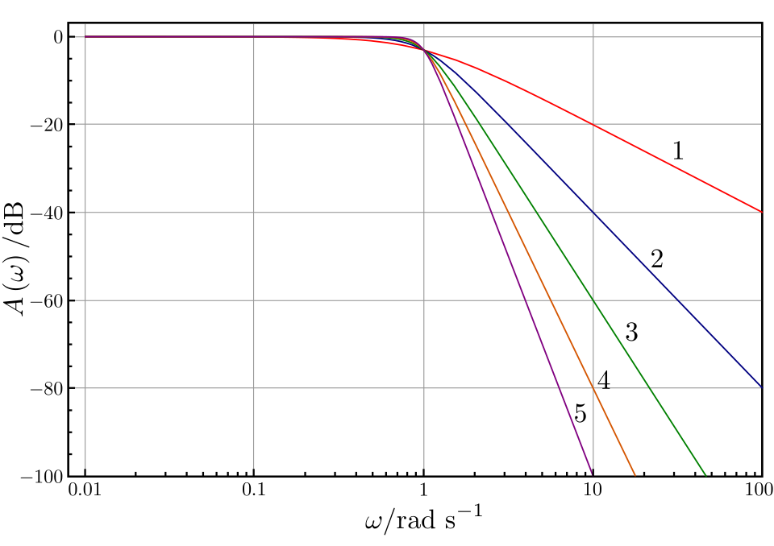

Instrumentation in Speech and Hearing
Pre-amplifiers, power amplifiers and filters; digital hearing aids, group amplification and assistive listening devices, audiometers, middle ear analysers, speech and voice analysis systems; calibration equipment and audiometer calibration.
- 5.1Common elements in instruments: pre-amplifiers and power amplifiers1.5 hours
- 5.2Filters: role in signal processing, types and frequency response1.5 hours
- 5.3Digital hearing aids: principle of operation and technology1.5 hours
- 5.4Group amplification and assistive listening devices1 hour
- 5.5Audiometers: principle of operation and technology2 hours
- 5.6Middle ear analysers (immittance meters)1.5 hours
- 5.7Systems for speech and voice analysis1.5 hours
- 5.8Equipment for calibration: sound level meter, artificial ear, artificial mastoid and couplers2 hours
- 5.9Equipment setup and procedure for output calibration of a pure-tone audiometer in AC and BC mode2 hours
Common elements in instruments: pre-amplifiers and power amplifiers
Almost every instrument in a speech and hearing clinic contains two kinds of amplifier: a pre-amplifier that lifts a tiny, fragile signal from a microphone or electrode to a workable level without adding noise, and a power amplifier that delivers enough current and voltage to drive an earphone, loudspeaker or hearing-aid receiver. This topic explains what each one must do well, how the power-amplifier classes A, B, AB and D differ, and where each is found in audiometers, hearing aids, speech trainers and group amplifiers.
What it is
A pre-amplifier (preamp) is the first amplifying stage after a sensor. It works with very small voltages, from microvolts (brain responses picked up by electrodes) to millivolts (microphones), and raises them to about a volt. A power amplifier is the last stage before a transducer. Its job is to supply power (watts or milliwatts) to a low-impedance load such as an 8 Ω loudspeaker or a 10 Ω audiometric earphone.
Why it is required
A microphone signal is too weak to process or to drive an earphone directly, and it is easily spoilt by noise and hum. Dividing the work in two lets each stage be designed for its own job: the preamp for low noise and correct loading of the sensor, the power amplifier for output power, low distortion and efficiency (which decides heat and battery life).
How it works
Both use transistors (or integrated circuits built from transistors) that let a small input control a larger flow of current from the power supply. The preamp mainly multiplies voltage. The power amplifier mainly adds current capability. The way the output transistors are switched on and off, called the class of operation, sets how much of the supply power reaches the load and how much is wasted as heat.
Background: gain, levels and the signal chain
Recall from 1.4 Amplifiers that an amplifier's gain is the ratio of output to input. Voltage gain Av = Vout / Vin. Gain is usually quoted in decibels, because the gains of stages connected one after another (in cascade) then simply add. The bandwidth is the range of frequencies over which the gain stays within 3 dB of its mid-band value. For audio instruments this should cover at least the range being tested, for example 125 Hz to 8 kHz for a conventional audiometer and wider for extended high-frequency testing.
Think of the signal chain as a relay team. The first runner (the preamp) receives a very delicate baton and must not drop or dirty it. Later runners (filters, attenuators, processors) shape it. The last runner (the power amplifier) must be strong enough to push the load. The typical signal levels at each point are very different:
| Signal source | Typical level | Example in the clinic |
|---|---|---|
| Scalp electrodes (auditory brainstem response) | below 1 µV (ABR), buried in about 10 to 100 µV of EEG | ABR and other evoked-potential systems |
| Dynamic microphone | about 1 to 10 mV for speech | Speech trainers, group amplifiers |
| Condenser or electret microphone (with internal buffer) | about 5 to 50 mV | Recording rooms, hearing aids, sound level meters |
| Line level (after preamp) | about 0.3 to 1.5 V | Audiometer internal signals, sound card inputs |
| Earphone drive | tens of mW at most, often much less | Audiometer TDH-type or insert earphones |
| Loudspeaker drive | about 1 to 50 W | Free-field audiometry, sound field classroom systems |
Values vary widely between devices; the table only shows the scale of the problem. Between a microphone and a loudspeaker the power can rise by a factor of a million or more (60 dB or more), so it is sensible to share the work between stages.
Architecture and signal flow
Figure 5.1a. General signal chain of an audio instrument such as a speech trainer or the speech channel of an audiometer. The preamplifier and the power amplifier sit at the two ends of the chain; both draw their energy from the DC power supply.
Walking through the chain:
- The microphone converts sound pressure to a small voltage (a few millivolts).
- The preamplifier raises this to about 1 V while adding as little noise as possible. In an audiometer the equivalent stage for a pure tone is the output of the oscillator or digital-to-analogue converter, which already produces a clean volt-level signal.
- Filters remove unwanted frequencies (topic 5.2), for example rumble below the speech range or hiss above it.
- The attenuator sets the level. In an audiometer this is the hearing level dial, which changes the output in precise 5 dB (or 1 or 2 dB) steps.
- The power amplifier supplies the current that the low-impedance transducer needs.
- The transducer (earphone, bone vibrator, loudspeaker or hearing-aid receiver) turns the electrical signal back into sound or vibration.
Pre-amplifiers
The preamp is the most sensitive point of any instrument because anything it adds is amplified by every stage after it. Its important properties are listed below.
Low noise
Every resistor and transistor generates a tiny random voltage called electrical noise (heard as hiss). Noise added at the first stage is amplified by all later stages, while noise added later is not. So the overall noise of a well-designed chain is set almost entirely by the first stage. This is why designers spend money on a low-noise preamp and use ordinary parts later. The noise of a preamp is often quoted as equivalent input noise (EIN): the noise voltage that, applied at the input of a perfect noiseless amplifier, would give the same output noise. For a hearing aid the EIN is quoted as a sound pressure level, typically somewhere around 20 to 30 dB SPL, which tells you the quietest sound that is not masked by the aid's own hiss.
High input impedance and correct loading
Impedance is the opposition a circuit offers to alternating current, measured in ohms (Ω). Every source has an internal (output) impedance, and every amplifier input has an input impedance. The two form a voltage divider: only part of the source voltage appears at the amplifier input.
If Zin is much larger than Zsource, almost all of the signal is transferred. A useful rule is that the input impedance should be at least ten times the source impedance. For evoked-potential electrodes this matters even more, because the electrode-skin impedance can be several kilohms, and unequal electrode impedances spoil the rejection of interference. That is why clinicians clean the skin and aim for electrode impedances typically below about 5 kΩ and matched within a few kilohms.
Gain and headroom
The preamp needs enough gain to bring the weakest expected signal up to the working level, but not so much that loud inputs overload it. Headroom is the margin, in dB, between the normal operating level and the level at which the amplifier clips. A shout close to a speech-trainer microphone can be 30 dB or more above normal speech, so a speech preamp needs generous headroom or an automatic gain control.
Differential input and common-mode rejection
A differential amplifier amplifies the difference between two inputs and ignores what is common to both. Mains interference at 50 Hz reaches both active and reference electrodes almost equally (a common-mode signal), whereas the brain response differs between them. The common-mode rejection ratio (CMRR) says how strongly the common part is rejected; biological amplifiers typically offer 100 dB or more. The same principle is used in balanced microphone cables in recording rooms: interference picked up equally on both wires is cancelled at the balanced preamp input.
Other features
- Phantom power: studio condenser microphones need a DC polarising or supply voltage, usually 48 V sent along the same balanced cable from the preamp.
- Bandwidth and low distortion: the preamp must not colour the sound. Its bandwidth is normally much wider than the audio range.
- Protection and isolation: in patient-connected equipment (ABR, ASSR) the input stage is isolated from mains for patient safety.
Power amplifiers
A power amplifier must deliver current as well as voltage. The electrical power in a resistive load is
A loudspeaker of 8 Ω driven at 8 V RMS takes 8 W. An op-amp that happily produces 8 V into 10 kΩ cannot supply the 1 A that 8 Ω demands, so a power stage with large output transistors is needed. The power stage is usually an emitter follower or push-pull arrangement: it gives little or no extra voltage gain but a large current gain, and a low output impedance so that the load voltage does not sag.
Efficiency
Efficiency (η, eta) is the fraction of the power drawn from the supply that actually reaches the load. The rest becomes heat in the output transistors.
Efficiency matters for two reasons: heat (a mains-powered group amplifier needs heat sinks and ventilation) and battery life (a hearing aid runs for days on a tiny cell, so every microwatt counts).
Classes of power amplifier in simple terms
Figure 5.1b. Current in one output transistor for each class when the amplifier produces a sine wave. Class A never switches off; class B conducts for exactly half of each cycle (a second transistor handles the other half); class AB conducts slightly more than half; class D switches fully on and off many times per cycle, with the pulse width following the signal.
Class A
The output transistor is biased so that it always conducts, with a steady quiescent (idle) current half way through its range. The signal pushes the current up and down around this mid-point. Analogy: a tap that is always half open, and the signal opens or closes it a little. The result is excellent linearity (no switching glitches) but poor efficiency, because the full idle current flows even in silence. With a simple resistive load the theoretical maximum efficiency is 25 %, rising to 50 % with transformer coupling; real circuits are lower. Class A is used where signals are small and purity matters more than power: preamplifier stages, earphone drivers in some audiometers, and the output stages of early analogue body-worn and behind-the-ear hearing aids for mild losses.
Class B
Two transistors work in push-pull: one handles the positive half of the waveform and the other the negative half, and each is fully off when idle. Analogy: two people on a two-handed saw, each pulling in one direction only. No current flows in silence, so efficiency is much better, with a theoretical maximum of π/4 = 78.5 % at full output. The weakness is crossover distortion: a transistor needs about 0.6 V at its base before it starts to conduct, so for a moment near zero neither transistor conducts and the waveform has a small flat step at every zero crossing. This distortion is most noticeable for quiet sounds, which is bad for audio.
Class AB
Class AB is class B with a small bias current so that both transistors conduct slightly around the crossover point. This removes almost all crossover distortion while keeping most of class B's efficiency (real circuits typically reach about 50 to 70 % at full power). Class AB is the standard linear power amplifier in audio equipment: audiometer loudspeaker channels, speech trainers, group hearing aids and many classroom sound field amplifiers.
Class D
Class D works in a completely different way. The output transistors act as switches that are either fully on or fully off, flipping at a high frequency (typically a few hundred kilohertz). The audio signal controls the width of each pulse: pulse-width modulation (PWM). A wide pulse means a large positive value, a narrow pulse a large negative value. A low-pass filter (or, in a hearing aid, the inductance of the receiver coil and the ear's own insensitivity to ultrasound) averages the pulses back into the audio waveform. Analogy: dimming a room by flicking the light switch on and off very fast and varying how long it stays on. A switch that is fully on has almost no voltage across it, and a switch that is fully off has no current through it; in both cases it wastes very little power. Real class D amplifiers typically reach 85 to 95 % efficiency at high output. Class D is used in nearly all modern hearing aids (which drive the receiver directly from an H-bridge switching stage), in battery-powered portable loudspeakers and in many modern classroom amplifiers. Its drawbacks are switching interference (electromagnetic interference, EMI) that must be filtered and shielded, and some added distortion if the design is poor.
Linear classes (A, B, AB)
- Transistors act as variable resistors.
- Class A: purest, least efficient.
- Class B: efficient, crossover distortion.
- Class AB: the usual audio compromise.
- Heat sinks needed at high power.
Switching class (D)
- Transistors act as on/off switches.
- Pulse-width modulation plus filtering.
- Highest efficiency, small and cool.
- Ideal for batteries and hearing aids.
- Needs careful EMI filtering.
Components
| Part | What it does | What can go wrong |
|---|---|---|
| Input transistor or op-amp (preamp) | Amplifies the small signal with low noise | Noisy or damaged by static or overvoltage: hiss, crackle, no signal |
| Input coupling capacitor | Passes AC signal, blocks DC | Dries out or leaks: weak bass, crackle, DC offset |
| Differential input stage (biological amplifiers) | Rejects common-mode interference | Unequal electrode impedances reduce rejection: 50 Hz hum in recordings |
| Gain-setting resistors / volume control | Fix or adjust amplification | Worn potentiometer: scratchy or intermittent sound |
| Output transistors (power stage) | Deliver current to the load | Overheating, short-circuit damage: distortion or silence |
| Heat sink | Removes heat from output transistors | Blocked ventilation: thermal shutdown during long sessions |
| Output filter (class D) | Removes switching frequency | Faulty inductor: interference, whistles in nearby equipment |
| Power supply | Provides steady DC rails (1.5 DC power supply) | Poor smoothing: hum; weak battery: distortion at loud peaks |
Key parameters and specifications
| Parameter | Typical value | Clinical meaning |
|---|---|---|
| Voltage gain (preamp) | typically 20 to 60 dB (microphone); 60 to 100 dB or more overall for evoked potentials | Enough to raise the weakest input to a usable level |
| Equivalent input noise | a few nV/√Hz for good audio preamps; about 20 to 30 dB SPL for hearing aids | Sets the softest signal that is not lost in hiss |
| Input impedance | typically a few kΩ (microphone inputs) to many MΩ (electrode inputs) | Avoids loading the source and losing signal |
| CMRR | typically 100 dB or more for biological amplifiers | Rejects mains hum in ABR and EEG |
| Bandwidth | at least 20 Hz to 20 kHz for audio amplifiers | Covers all test frequencies without roll-off |
| Total harmonic distortion (THD) | well below 1 % for good amplifiers; audiometer standards set limits of a few per cent at the transducer | A distorted pure tone contains other frequencies that a listener may hear |
| Rated output power | mW for earphones; 1 to 50 W for loudspeakers | Enough for the maximum test level with headroom |
| Efficiency | about 20 % (class A) to above 85 % (class D) | Heat, size and battery life |
| Signal-to-noise ratio | typically 80 to 100 dB or more for mains audio amplifiers | No audible hiss in silent test intervals |
Equations and worked examples
Example 1. A microphone gives 10 mV. The preamp must deliver 1 V. Required gain = 1 / 0.01 = 100 times = 20 log10(100) = 40 dB. If the power amplifier then adds 26 dB, the total gain is 40 + 26 = 66 dB.
Example 2 (loading). A microphone with a source impedance of 600 Ω is connected to a preamp with an input impedance of 10 kΩ. The fraction reaching the input is 10 000 / 10 600 = 0.943, a loss of only 0.5 dB. If the input impedance were also 600 Ω, half the voltage would be lost (6 dB).
Example 3. A class B stage with ±12 V rails drives an 8 Ω loudspeaker to a peak of 10 V. Pout = 10² / (2 × 8) = 6.25 W. Psupply = 2 × 12 × 10 / (π × 8) = 9.55 W. Efficiency = 6.25 / 9.55 = 65.4 %, which matches (π/4)(10/12) = 65.4 %. About 3.3 W becomes heat.
Example 4. To deliver 1 W, a class A stage running at 25 % efficiency draws 4 W and wastes 3 W as heat, whereas a class D stage at 90 % draws 1.11 W and wastes only 0.11 W. For a hearing aid, whose total current drain is around a milliamp, this difference decides whether the battery lasts hours or days.
Where each class is used
| Instrument | Stage | Usual class and reason |
|---|---|---|
| Pure-tone audiometer (earphone and bone channels) | Output driver | Class AB (sometimes A): very low distortion needed for pure tones, power is small |
| Audiometer free-field channel | Loudspeaker amplifier | Class AB or D, a few watts to tens of watts |
| Digital hearing aid | Receiver driver | Class D (H-bridge): highest efficiency on a 1.2 to 1.45 V cell or rechargeable battery |
| Analogue hearing aids (older) | Output stage | Class A for mild losses; class B push-pull for power aids; later class D |
| Speech trainer, desk-top or group amplifier | Headphone amplifiers | Class AB, or class D in newer battery-operated units |
| Classroom sound field system | Loudspeaker amplifier | Class D increasingly common, class AB in older units |
| Evoked-potential system | Electrode amplifier | Low-noise differential preamp (class A small-signal stages) |
| Recording room | Microphone preamp in mixer or audio interface | Low-noise class A small-signal stages with phantom power |
Clinical applications
- In an audiometer, the purity of the pure tone depends on the whole chain. A distorted tone at a high level contains harmonics at 2f, 3f and so on, and a listener with a steeply sloping loss might respond to a harmonic instead of the test tone. Low-distortion power amplifiers and regular calibration prevent this.
- In ABR testing, the differential preamp with high CMRR is what makes a sub-microvolt response measurable at all. Good electrode preparation keeps impedances low and balanced so that the preamp can do its job.
- In speech and voice recording, a low-noise microphone preamp with correct gain setting keeps the noise floor low without clipping loud vowels, which matters for acoustic analysis of voice (jitter, shimmer, harmonic-to-noise ratio).
- In hearing aids, the class D output stage and a very low-current preamp are what make a hearing aid run for about a week on a small zinc-air cell.
- In group amplification, each child's headphone amplifier must provide enough output for severe and profound losses without distortion. See topic 5.4.
Limitations, errors and troubleshooting
| Problem | Likely cause | What to check or do |
|---|---|---|
| Steady hum at 50 Hz (and 100 Hz) | Ground loop, poor power supply smoothing, unbalanced cable near mains wiring | Use one earth point, balanced cables, move cables away from mains; check electrode impedances in ABR |
| Hiss in silent intervals | Preamp gain set too high with a weak source, or noisy first stage | Set gain correctly at the first stage; check microphone and preamp |
| Harsh, flattened sound on loud inputs | Clipping: signal exceeds the supply voltage limits | Reduce input gain; use an amplifier with more headroom; check battery or supply voltage |
| Rough sound at low levels | Crossover distortion (class B or poorly biased AB) | Service the amplifier; the bias setting may have drifted |
| Amplifier cuts out after long use | Thermal shutdown from overheating | Clear ventilation, reduce volume, check load impedance is not too low |
| Buzzing in hearing aids near equipment | EMI from switching supplies or class D amplifiers | Separate equipment, use shielded cables, check filters |
| Short battery life | High output demand, streaming, faulty (high-drain) circuit | Measure battery current with a test box; compare with the specification |
Demonstration
- Connect a dynamic microphone directly to a small loudspeaker: almost nothing is heard. Then route it through a mixer preamp and a power amplifier. This shows why both stages are needed.
- With an oscilloscope, display the microphone output (millivolts) and the preamp output (about a volt) and read off the gain in dB.
- Turn the preamp gain too high and speak loudly: observe the flat-topped clipped waveform and listen to the harsh sound.
- If available, display a class D amplifier output before and after its output filter to show PWM pulses becoming a smooth waveform.
- Use the interactive demo below to compare classes A, B, AB and D in waveform shape, distortion and efficiency.
Try it: amplifier classes, distortion and efficiency
Choose a class and change the output level. Watch crossover distortion in class B at low levels, clipping above 100 %, and how efficiency changes with level.
The efficiency curves are idealised: class A with a resistive load (maximum 25 %), class B from the textbook formula, and illustrative fixed losses for AB and D. Real amplifiers are somewhat lower.
Current developments
- Class D amplifiers with better feedback designs now reach distortion levels close to good linear amplifiers, so they are replacing class AB in many clinic and classroom products.
- In hearing aids and other small devices, the preamp, converters, processor and class D output are integrated on one low-voltage chip, reducing noise and current drain.
- Audio interfaces with low-noise preamps and 24-bit converters have made good-quality speech recording affordable for clinics and students.
- Evoked-potential systems increasingly digitise the signal very close to the electrodes, reducing cable pick-up of interference.
Key points to remember
- A preamp raises tiny sensor signals (µV to mV) to about 1 V with minimum added noise.
- The first stage sets the noise of the whole chain; later stages matter much less.
- Input impedance should be at least about ten times the source impedance to avoid signal loss.
- Differential preamps with high CMRR reject 50 Hz interference in ABR recordings.
- A power amplifier supplies current to low-impedance loads; P = Vpeak² / (2R) for a sine wave.
- Efficiency = load power / supply power; the rest becomes heat.
- Class A: always on, pure, maximum 25 % (50 % with transformer). Class B: push-pull, maximum 78.5 %, crossover distortion.
- Class AB removes crossover distortion and is the usual linear audio amplifier (audiometers, speech trainers).
- Class D uses pulse-width modulation, typically 85 to 95 % efficient, and is used in hearing aids.
Exercises
State two differences between a pre-amplifier and a power amplifier.
Model answer: a pre-amplifier handles very small signals (microvolts to millivolts) and is optimised for low noise, high input impedance and voltage gain; it sits at the input of the chain. A power amplifier handles large signals, is optimised for output current, power and efficiency, has a low output impedance and sits at the output, driving the earphone or loudspeaker.
A microphone produces 5 mV and the preamp output is 0.5 V. Find the preamp gain in dB. A power amplifier of 20 dB follows. What is the total gain?
Model answer: voltage ratio = 0.5 / 0.005 = 100, so gain = 20 log10(100) = 40 dB. Total = 40 + 20 = 60 dB.
Explain why the pre-amplifier decides the noise performance of an instrument.
Model answer: noise added by the first stage is amplified by every following stage, while noise added later is amplified less or not at all. Once the signal has been raised to about a volt by a low-noise first stage, later noise is small by comparison. So a low-noise, correctly loaded first stage gives a quiet instrument.
An amplifier delivers 4 W to a loudspeaker and draws 10 W from its supply. Find its efficiency and the heat produced. Which class is it most likely to be?
Model answer: η = 4 / 10 = 40 %; heat = 10 − 4 = 6 W. This is above the 25 % limit of a simple class A stage and below class D values, so a class AB (or B) amplifier operating below full power is most likely.
Explain class A, B, AB and D power amplifiers with neat sketches of output current. Compare their efficiency and state where each is used in speech and hearing instruments.
Model answer outline: draw Figure 5.1b. Class A conducts for the full cycle, has a steady bias current, best linearity, maximum 25 % (resistive load) or 50 % (transformer); used in small-signal stages and early hearing aids. Class B uses push-pull transistors each conducting 180°, zero idle current, maximum 78.5 %, suffers crossover distortion. Class AB adds small bias to remove crossover distortion, typical 50 to 70 %; used in audiometers, speech trainers and group amplifiers. Class D switches transistors fully on and off using PWM followed by a low-pass filter, 85 to 95 %; used in hearing aids and portable or classroom amplifiers. Close with a comparison table.
A class B amplifier with ±15 V rails drives a sine wave of 12 V peak into 8 Ω. Find output power, supply power and efficiency.
Model answer: Pout = 12² / (2 × 8) = 9.0 W. Psupply = 2 × 15 × 12 / (π × 8) = 14.3 W. η = 9.0 / 14.3 = 62.8 %, which equals (π/4)(12/15).
An ABR recording shows strong 50 Hz interference. Explain the role of the differential preamp and list what the clinician should check.
Model answer: the differential preamp amplifies the difference between active and reference electrodes and rejects what is common to both (CMRR). Mains interference is mostly common-mode, so it is rejected only if both electrode paths are similar. Check electrode impedances (low and balanced), re-prepare the skin, keep leads short and braided together, move away from mains cables and equipment, and confirm the patient ground electrode is attached.
References
- Malvino A. P., Bates D. J. Electronic Principles, 8th edition. McGraw-Hill (chapters on power amplifiers and op-amps).
- Moser P. J. Electronics and Instrumentation for Audiologists. Psychology Press.
- Horowitz P., Hill W. The Art of Electronics, 3rd edition. Cambridge University Press.
- Self D. Audio Power Amplifier Design. Focal Press.
- Dillon H. Hearing Aids, 2nd edition. Boomerang Press / Thieme (hearing-aid amplifiers and receivers).
- IEC 60645-1, Electroacoustics: Audiometric equipment, Part 1: Equipment for pure-tone and speech audiometry.
- Going further: M.Sc. 3.1 Digital hearing-aid architecture; M.Sc. 6.2 ABR; M.Sc. 2.8 Power supply and safety.
Filters: role in signal processing, types and frequency response
A filter is a circuit or a calculation that lets some frequencies through and weakens others. Filters are everywhere in speech and hearing instruments: they make the narrowband masking noise of an audiometer, split sound into hearing-aid channels, clean the ABR from muscle noise and mains hum, and stop aliasing before sound is digitised. This topic explains the four basic filter types, how to read a frequency response, and what cutoff, order, slope and Q mean.
What it is
A frequency-selective system whose gain depends on frequency. Its behaviour is described by its frequency response: a graph of output level relative to input level (in dB) against frequency. Filters can be passive (resistors, capacitors, inductors), active (with an op-amp) or digital (arithmetic on samples in a processor).
Why it is required
Real signals contain wanted and unwanted parts at different frequencies: speech plus low-frequency rumble, a brain response plus 50 Hz hum and muscle noise, an audio signal plus frequencies above half the sampling rate. A filter keeps the useful band and rejects the rest. Filters also create signals, such as narrowband noise, and analyse them, as in octave-band sound level meters.
How it works
Capacitors and inductors have impedances that change with frequency. Combined with resistors they form frequency-dependent voltage dividers. A capacitor passes high frequencies easily and blocks low ones; an inductor does the opposite. Digital filters achieve the same result by adding together delayed and weighted copies of the signal samples.

Background and principle of operation
Any sound can be described as a sum of sine waves of different frequencies (its spectrum). A filter changes the amplitude (and the timing, or phase) of each sine component according to its frequency. If a filter has a gain of 0 dB at 500 Hz and −20 dB at 5 kHz, a 500 Hz component passes unchanged and a 5 kHz component comes out at one tenth of its original amplitude.
The key idea for simple filters is the frequency dependence of a capacitor. Its reactance (its opposition to AC) is
At low frequency XC is large (the capacitor looks almost like an open switch); at high frequency it is small (almost a short circuit). An inductor behaves in the reverse way: XL = 2πfL, small at low frequency and large at high frequency. Put a capacitor with a resistor and you have a voltage divider whose ratio depends on frequency: a filter.
Do not confuse these signal filters with the smoothing filter of a power supply (1.5 DC power supply). That filter is also a low-pass filter (a large capacitor passes the ripple to ground and keeps the DC), but its aim is to produce steady DC, whereas the filters in this topic shape audio and biological signals.
Terms used to describe a filter
| Term | Meaning |
|---|---|
| Passband | Range of frequencies passed with little change (near 0 dB). |
| Stopband | Range of frequencies strongly attenuated. |
| Cutoff frequency fc | Edge of the passband, conventionally where the output has fallen by 3 dB (to 70.7 % of the voltage, half the power). Also called the corner or −3 dB frequency. |
| Transition band | Region between passband and stopband where the gain is falling. |
| Roll-off or slope | How fast the gain falls outside the passband, in dB per octave (doubling of frequency) or dB per decade (ten times the frequency). |
| Order | Number of reactive elements (capacitors, inductors) or poles. Each order adds 6 dB/octave (20 dB/decade) to the ultimate slope. |
| Centre frequency f0 | Middle of a band-pass or band-stop filter (the geometric mean of the two cutoffs: f0 = √(f1 f2)). |
| Bandwidth (BW) | Difference between upper and lower cutoff: BW = f2 − f1. |
| Quality factor Q | Sharpness of a band filter: Q = f0 / BW. High Q means a narrow band. |
| Ripple | Small ups and downs of gain within the passband (present in some filter families). |
| Phase shift and delay | Filters delay different frequencies by different amounts; steep filters ring and delay more. |
Types of filters and their frequency response
Figure 5.2a. Frequency responses (gain against log frequency) of the four basic filter types, drawn for second-order Butterworth filters.
- Low-pass filter (LPF): passes frequencies below fc, attenuates those above. Uses: anti-aliasing before an ADC, removing hiss, smoothing a DAC output, limiting the upper frequency of ABR recordings.
- High-pass filter (HPF): passes frequencies above fc. Uses: removing rumble, wind and handling noise from speech recordings, removing slow drift and DC from electrode signals, pre-emphasis before speech analysis.
- Band-pass filter (BPF): passes a band between f1 and f2. It can be made by a high-pass followed by a low-pass. Uses: narrowband masking noise, octave and one-third octave analysers, hearing-aid channels, ABR recording band.
- Band-stop filter (BSF), and its very narrow form the notch filter: rejects a band and passes everything else. Uses: removing 50 Hz mains hum, suppressing a feedback whistle at one frequency in a hearing aid.
A fifth type, the all-pass filter, passes all frequencies at equal gain but changes phase; it is used inside some processing systems and need only be known by name.
Passive RC filters
Figure 5.2b. First-order passive RC filters. Swapping R and C turns a low-pass into a high-pass filter. For both, fc = 1 / (2πRC).
In the RC low-pass filter, at low frequency the capacitor's reactance is large, so almost the whole input appears across it at the output. At high frequency the capacitor's reactance is small and it shorts the signal to 0 V. At the cutoff frequency the reactance equals the resistance and the output is 3 dB down.
Passive filters are simple, need no power and add little noise. Their drawbacks: they cannot give gain (the output is always smaller than the input), their response changes when a load is connected to the output, and steep passive filters need inductors, which are bulky and pick up hum. Passive LC filters are still used where signals are large, for example the output filter of a class D amplifier (topic 5.1) and loudspeaker crossover networks.
Active filters
An active filter adds an amplifier, usually an op-amp, to resistors and capacitors. The op-amp gives a high input impedance and low output impedance, so stages can be connected in a chain without loading each other, and it can provide gain. With feedback around the op-amp, a second-order response (12 dB/octave) can be obtained without any inductor. A common circuit is the Sallen-Key filter. Higher orders are made by cascading second-order sections: two sections give fourth order (24 dB/octave). Active filters are standard in the analogue parts of audiometers, evoked-potential amplifiers and sound level meters. Their limits: they need a power supply, add some noise, and the op-amp limits the maximum signal and frequency.
Order, slope and filter families
A first-order filter falls at 6 dB/octave far from its cutoff: every doubling of frequency halves the output voltage. Each additional order adds another 6 dB/octave, so a fourth-order filter falls at 24 dB/octave. Higher order means a sharper separation between wanted and unwanted frequencies, at the cost of more components, more delay and more ringing.
For a given order, the shape near the cutoff depends on the filter family:
- Butterworth: maximally flat passband, moderate transition. A good general choice and the one used in the demo below.
- Chebyshev: steeper transition, but with ripple in the passband.
- Bessel: gentle transition, but nearly constant delay across frequencies, so waveforms (such as clicks and evoked potentials) keep their shape best.
- Elliptic: steepest transition, ripple in both passband and stopband.
Digital filters
Once a signal has been digitised, filtering is done by arithmetic. A digital filter computes each output sample as a weighted sum of the current and past input samples (and, in some designs, past output samples). The two main kinds are FIR (finite impulse response), which uses only input samples and can have exactly linear phase, and IIR (infinite impulse response), which also feeds back past outputs and copies the behaviour of analogue Butterworth or Chebyshev filters with fewer calculations. Digital filters never drift with temperature or age, can be changed by software, and can be made much steeper than practical analogue filters. They are used in hearing aids, audiometers with digital signal generation, ABR systems and speech analysis software. Going further: M.Sc. 1.8 FIR and IIR filters.
One analogue filter can never be replaced by a digital one: the anti-aliasing filter, which must remove frequencies above half the sampling rate before the ADC. Once aliasing has happened, the false low frequencies cannot be separated from real ones.
Components
| Part | Role in a filter | What can go wrong |
|---|---|---|
| Resistor | Sets cutoff with the capacitor; sets gain in active filters | Tolerance or drift shifts the cutoff |
| Capacitor | Frequency-dependent element | Tolerances of 5 to 20 % shift the cutoff; electrolytics leak and dry out |
| Inductor | Frequency-dependent element in LC filters | Bulky, picks up magnetic hum, saturates at high current |
| Op-amp | Buffering and gain in active filters | Clipping at high level, noise, limited bandwidth |
| DSP or processor (digital filter) | Computes filtered samples | Wrong coefficients or settings give the wrong band; rounding errors in long IIR filters |
Key parameters and specifications
| Parameter | Typical value | Clinical meaning |
|---|---|---|
| ABR recording band-pass | typically about 30 to 150 Hz (high-pass) and 1500 to 3000 Hz (low-pass) | Keeps the ABR waves, rejects slow EEG and high-frequency noise; settings change latency and amplitude, so norms must use the same filter |
| Notch filter | 50 Hz in India (60 Hz in some countries) | Removes mains hum; can distort responses with energy near 50 Hz |
| Anti-aliasing cutoff | a little below fs/2, for example about 7 kHz at 16 kHz sampling | Prevents false frequencies in recordings |
| Narrowband masking noise | centred on the test frequency, width roughly one-third to one-half octave (limits set in audiometer standards) | Masks the test tone efficiently with the least total loudness |
| One-third octave band filter | Q about 4.3 | Sound level meter band analysis, room noise measurement |
| Hearing-aid channels | typically from 4 to 20 or more channels | Separate gain and compression for different frequency regions |
| Slope | 6 dB/octave per order; 24 to 48 dB/octave common in instruments | Sharpness of rejection |
Worked examples
Example 1. An RC low-pass filter has R = 10 kΩ and C = 10 nF. fc = 1 / (2π × 10 000 × 10 × 10−9) = 1592 Hz (about 1.6 kHz).
Example 2. A fourth-order Butterworth low-pass filter has fc = 1 kHz. At 2 kHz (one octave above) the attenuation is 10 log10(1 + 28) = 24.1 dB. A first-order filter at the same point gives only 10 log10(1 + 22) = 7.0 dB, and needs to go to 10 kHz to reach about 20 dB.
Example 3. A one-third octave band has upper and lower edges at f0 × 21/6 and f0 / 21/6. Its Q = 1 / (21/6 − 2−1/6) = 4.32. For f0 = 1 kHz the bandwidth is 1000 / 4.32 = 231 Hz. A one-octave band has Q = 1.41.
Example 4. A 50 Hz notch with Q = 10 has a bandwidth of 50 / 10 = 5 Hz: it removes 47.5 to 52.5 Hz roughly (between the −3 dB points) and leaves the rest of the spectrum nearly untouched.
Clinical applications
- 50 Hz notch in ABR: mains hum can be much larger than the ABR. A notch filter removes it, but it can also remove genuine low-frequency energy and cause ringing, so good practice is to reduce hum at its source (electrode impedance, cable layout) and use the notch only when needed. The ABR band-pass filter must match the settings used for the clinic's normative data.
- Anti-aliasing: every digital audiometer, hearing aid, ABR system and sound card has a low-pass filter before its ADC. Without it, a 9 kHz component sampled at 16 kHz would appear falsely at 7 kHz.
- Hearing-aid bands: a filter bank splits sound into channels so that each can have its own gain and compression, matching a sloping audiogram. See topic 5.3.
- Audiometer narrowband masking noise: white noise passed through a band-pass filter centred on the test frequency. Only noise near the test frequency masks the tone (the critical band idea), so narrowband noise masks effectively without being unnecessarily loud.
- Speech analysis: a first-order high-pass pre-emphasis boosts high frequencies before spectral analysis; band-pass filter banks form the basis of spectrograms and of cochlear implant channels.
- Sound level meters: A- and C-weighting are standardised filters; octave and one-third octave filters analyse noise in clinics and test rooms.
- Tympanometry: the probe microphone signal is filtered around the probe tone (226 Hz or 1000 Hz) to measure the response at that frequency only.
Limitations, errors and troubleshooting
| Problem | Cause | What to check or do |
|---|---|---|
| ABR latencies differ from norms | Filter settings differ from those used for the norms; steep filters shift peaks | Use the same filter settings as the normative data; record them in the report |
| Ringing or extra waves after a click | Very steep or high-Q filter, or notch filter | Use gentler or zero-phase filtering; switch off the notch if hum is low |
| Hum remains despite notch | Harmonics at 100, 150 Hz and above; very large interference | Fix the cause: electrodes, grounding, cable routing |
| Strange low-pitched tones in a recording | Aliasing from missing or inadequate anti-aliasing filter | Record at a higher sampling rate; check interface settings |
| Masking noise sounds too wide or narrow | Filter fault or wrong calibration of narrowband noise | Check with a sound level meter and one-third octave analysis during calibration |
| Cutoff not where designed | Component tolerance or ageing | Measure the response; replace drifting capacitors |
Demonstration
- Build an RC low-pass filter on a breadboard (for example 10 kΩ and 10 nF). Feed it from a signal generator and view input and output on an oscilloscope.
- Sweep the frequency from 100 Hz to 20 kHz. Record the output amplitude and plot it in dB against log frequency. Find the −3 dB point and compare with 1 / (2πRC).
- Swap R and C to make a high-pass filter and repeat.
- In Audacity or Praat, apply high-pass, low-pass and band-pass filters to a speech recording and listen: low-pass speech sounds muffled, high-pass speech sounds thin but often remains intelligible.
- Use the explorer below to see how type, cutoff, order and Q change the response.
Try it: filter response explorer
Choose a filter type, move the cutoff or centre frequency and change the order. The dot shows the gain at the probe frequency.
Current developments
- Most filtering in modern instruments is digital; analogue filtering is reduced to the anti-aliasing and reconstruction stages, often simplified by oversampling converters.
- Adaptive filters, whose coefficients update continuously, are used for feedback cancellation and noise reduction in hearing aids.
- Evoked-potential software increasingly offers zero-phase (forward and backward) digital filtering applied after recording, which avoids latency shifts.
- Filter banks designed to mimic cochlear frequency analysis are used in hearing-aid and cochlear-implant processing and in speech analysis.
Key points to remember
- A filter passes some frequencies and attenuates others; its frequency response is gain (dB) against frequency.
- Four types: low-pass, high-pass, band-pass, band-stop (notch).
- Cutoff is the −3 dB point; for an RC filter fc = 1 / (2πRC).
- Each order adds 6 dB/octave (20 dB/decade) to the slope.
- Q = centre frequency / bandwidth; a high Q means a narrow band.
- Passive filters need no power but cannot amplify; active filters use op-amps, give gain and avoid inductors.
- The anti-aliasing filter before an ADC must be analogue.
- ABR filter and notch settings affect the response; always match normative settings.
- Narrowband masking noise is band-pass filtered noise centred on the test frequency.
Exercises
Define cutoff frequency, bandwidth and Q.
Model answer: the cutoff frequency is the frequency at which the output falls 3 dB below the passband level (half power). Bandwidth is the difference between the upper and lower cutoff frequencies of a band filter. Q is the centre frequency divided by the bandwidth and describes how sharp or narrow the band is.
Find the cutoff frequency of an RC high-pass filter with R = 3.3 kΩ and C = 1 µF.
Model answer: fc = 1 / (2π × 3300 × 1 × 10−6) = 48.2 Hz. Such a filter would remove very low-frequency rumble and drift while passing speech.
A low-pass filter has a slope of 18 dB/octave. What is its order? By how much does it attenuate a tone two octaves above its cutoff (well into the stopband, approximately)?
Model answer: 18 / 6 = third order. Two octaves at about 18 dB each give roughly 36 dB (the exact Butterworth value at 4fc is 10 log10(1 + 46) = 36.1 dB).
A band-pass filter has cutoffs of 707 Hz and 1414 Hz. Find its centre frequency, bandwidth and Q.
Model answer: f0 = √(707 × 1414) = 1000 Hz. BW = 1414 − 707 = 707 Hz. Q = 1000 / 707 = 1.41. This is a one-octave band centred on 1 kHz.
What is a filter? Explain the different types of filters with their frequency response curves and give one application of each in speech and hearing instruments.
Model answer outline: definition and role (keep wanted band, reject unwanted). Draw Figure 5.2a with passband, stopband, cutoff and slope marked. Low-pass: anti-aliasing before ADC. High-pass: removing rumble and drift. Band-pass: narrowband masking noise, hearing-aid channels, ABR recording band. Band-stop/notch: 50 Hz hum removal. Add passive vs active, order and slope (6 dB/octave per order), Q, and the RC formula.
Compare passive and active filters.
Model answer: passive filters use only R, L and C, need no power, add very little noise and handle large signals, but they cannot give gain, are affected by the load and need bulky inductors for steep responses. Active filters add op-amps, which give gain, buffer the stages so they do not load each other, and achieve steep responses without inductors; they need a power supply, add some noise and are limited in signal level and frequency by the op-amp.
A system samples at 16 kHz with no anti-aliasing filter. At what frequency will a 10 kHz component appear? Why must the anti-aliasing filter be analogue?
Model answer: frequencies above 8 kHz fold back about 8 kHz: 16 − 10 = 6 kHz. Once the signal has been sampled, the false 6 kHz component is indistinguishable from a genuine 6 kHz sound, so it must be removed before sampling, by an analogue low-pass filter.
References
- Malvino A. P., Bates D. J. Electronic Principles, 8th edition. McGraw-Hill (active filters).
- Moser P. J. Electronics and Instrumentation for Audiologists. Psychology Press.
- Williams A. B., Taylor F. J. Electronic Filter Design Handbook. McGraw-Hill.
- Speaks C. E. Introduction to Sound, 3rd edition. Singular (filters and spectra).
- Udayashankara V. Speech Signal Processing (digital filters in speech analysis).
- IEC 61260-1, Electroacoustics: Octave-band and fractional-octave-band filters, Part 1: Specifications.
- Going further: M.Sc. 1.8 FIR and IIR filters; M.Sc. 1.6 ADC and DAC; M.Sc. 3.2 Channel separation.
Digital hearing aids: principle of operation and technology
A digital hearing aid picks up sound, converts it into numbers, processes those numbers to suit one person's hearing loss, and turns them back into sound in the ear canal, all within a few milliseconds and on a battery the size of a shirt button. This topic explains the block diagram and components, the main processing features (multichannel compression, noise reduction, feedback cancellation, directionality), the physical styles and how the aid is programmed with fitting software.
What it is
A wearable, battery-powered amplifier whose core is a digital signal processor (DSP). It contains one or more microphones, an analogue-to-digital converter (ADC), the DSP, a digital-to-analogue output stage, a receiver (miniature loudspeaker) and supporting parts: battery, telecoil, wireless radio, memory and user controls.
Why it is required
Sensorineural hearing loss usually varies with frequency and also narrows the range between the softest audible sound and the loudest comfortable one (reduced dynamic range, linked to loudness recruitment). A useful aid must give different gain at different frequencies and less gain for loud sounds than for soft ones. Digital processing does this precisely, and adds noise reduction, feedback control and automatic adjustment that analogue aids could not offer.
How it works
The microphone signal is sampled and quantised by the ADC. The DSP splits it into frequency channels, calculates the gain needed in each channel for the current input level, applies directionality, noise reduction and feedback cancellation, recombines the channels and drives the receiver through a class D output stage. All parameters are set by the audiologist with fitting software.


Background: from analogue to digital
Early electronic hearing aids were analogue: the microphone signal was amplified by transistors, with screwdriver trimmers to adjust tone and maximum output. Later, digitally programmable analogue aids allowed settings to be stored, but the signal path was still analogue. Fully digital hearing aids became commercially available in the mid-1990s and now make up almost all aids fitted.
Three ideas explain what a digital aid does:
- Audibility: soft speech sounds must be raised above the person's thresholds, especially high-frequency consonants such as /s/ and /f/.
- Comfort: loud sounds must not become uncomfortable. Because the dynamic range is reduced, the aid must squeeze (compress) the wide range of everyday sound levels into the narrower range the ear can use.
- Clarity in noise: the aid should improve, or at least not worsen, the speech-to-noise ratio.
A digital system handles these as calculations. Gain is multiplication: 30 dB of gain means every sample is multiplied by 1030/20 = 31.6. Frequency-dependent and level-dependent gain is obtained by splitting the signal into channels and computing a separate gain for each, many times per second.
Block diagram and signal flow
Figure 5.3a. Block diagram of a digital hearing aid. The main path runs left to right; the telecoil and wireless radio are alternative inputs, and the memory holds the fitting settings and programs chosen by the audiologist.
- Microphones convert sound to a small voltage. Most aids use electret or, increasingly, MEMS (micro-electro-mechanical) microphones. Two microphones a few millimetres apart allow directional processing.
- The preamplifier and ADC raise the signal and convert it into a stream of numbers. Sampling rates are typically in the range of about 16 to 32 kHz or higher, giving an audio bandwidth of roughly 8 to 10 kHz in many aids. The ADC must handle a very wide range of levels, from soft speech to loud music.
- The DSP carries out all the processing (described below). It runs a program stored in memory with the settings chosen by the audiologist.
- The DAC and class D output stage convert the processed numbers into a pulse-width-modulated drive (topic 5.1). In many aids the receiver coil itself smooths the pulses.
- The receiver is a balanced-armature miniature loudspeaker. It is housed in the aid case (BTE, ITE) or in the ear canal at the end of a thin wire (RIC).
Components
| Component | What it does | What can go wrong |
|---|---|---|
| Microphone(s) and inlet ports | Pick up sound; two mics give directionality | Blocked by debris or moisture: weak, distorted or non-directional sound |
| ADC | Converts to digital samples | Overload by very loud sounds (for example music): distortion |
| DSP chip and memory | Processing, stores programs and data logging | Firmware fault, corrupted settings: reprogram with fitting software |
| Class D output and receiver | Produce sound in the ear canal | Wax in receiver or wax guard: weak or no sound; damaged receiver after a fall |
| Battery | Zinc-air (1.4 to 1.45 V; sizes 10, 312, 13 and 675) or rechargeable lithium-ion | Low voltage: intermittent sound, distortion, aid turning off; tab not removed from zinc-air cell |
| Telecoil | Picks up the magnetic field of an induction loop or telephone | Not activated in a program; poor orientation; picks up hum |
| Wireless radio (2.4 GHz and near-field magnetic induction, NFMI) | Streaming from phones, TVs, remote mics; ear-to-ear link; wireless fitting | Pairing problems, interference, faster battery drain while streaming |
| Controls: push button, volume control, app | Program change, volume change | Worn switch; user confusion between programs |
| Tubing, earmould, dome | Couple sound to the ear and control venting | Cracked or hardened tube, loose mould: feedback whistle; blocked vent: occlusion |
Processing in a digital hearing aid
Multichannel processing
The DSP splits the input into frequency bands using a filter bank (topic 5.2) or a fast Fourier transform. Each band, or a group of bands forming a compression channel, receives its own gain and compression. More channels allow a closer match to an irregular audiogram, but very many channels, each compressing independently, can flatten the spectral shape of speech. Typical aids have from about 4 to 20 or more channels.
Compression and WDRC
A linear aid gives the same gain at all input levels, so loud sounds become too loud, and the output is limited only by clipping. A compression aid reduces its gain as the input level rises. The input-output curve has these features:
- Compression threshold or kneepoint: input level above which compression starts.
- Compression ratio (CR): change in input level divided by the resulting change in output level. With CR = 2:1, a 10 dB rise in input gives only 5 dB rise in output.
- Attack time and release time: how fast the gain drops when a loud sound starts and recovers when it stops.
- Maximum power output (MPO) or output limiting: a ceiling, usually set by fast, high-ratio compression, that the output never exceeds.
Wide dynamic range compression (WDRC) uses a low kneepoint (typically about 40 to 55 dB SPL) and a moderate ratio (typically about 1.5:1 to 3:1). Soft sounds get the most gain (audibility), average speech less, loud sounds least (comfort). This matches the reduced dynamic range of the impaired ear. Try the demo below.
Worked example: G = 30 dB, K = 50 dB SPL, CR = 2:1. For 40 dB SPL input (below K) the output is 70 dB SPL (gain 30 dB). For 65 dB SPL input: Out = 50 + 30 + (65 − 50)/2 = 87.5 dB SPL (gain 22.5 dB). For 80 dB SPL input: Out = 80 + 30/2 = 95 dB SPL (gain 15 dB). A 40 dB range of input (40 to 80) has been squeezed into 25 dB of output (70 to 95).
Noise reduction
Speech is strongly modulated: its level rises and falls several times per second with syllables (about 4 Hz). Steady noises such as fans, air conditioners and traffic hum are much less modulated. Modulation-based noise reduction estimates, in each channel, whether the signal looks like speech or steady noise and reduces gain in channels dominated by noise. This improves listening comfort and reduces effort, but it cannot separate speech from noise at the same frequency and time, so benefits for understanding are usually modest. Some aids also reduce sudden impulse sounds (door slams, clattering plates) and wind noise.
Feedback cancellation
Acoustic feedback occurs when amplified sound leaks from the ear canal back to the microphone (through the vent, a loose mould or an open dome) and is amplified again, forming a loop that whistles when the loop gain exceeds 1 at some frequency. Digital aids use an adaptive feedback canceller: a digital filter continuously models the leakage path and subtracts the predicted feedback from the microphone signal. Other methods are notch filters at the whistling frequency, gain reduction in the offending band, and small frequency shifts that break the loop. Feedback cancellation permits more gain with open fittings, which are more comfortable.
Directionality
Two omnidirectional microphones, front and rear, are combined: the rear signal is delayed and subtracted from the front signal so that sound from behind cancels and sound from the front remains. The resulting polar patterns (cardioid, supercardioid and others) reduce noise from behind and the sides. Adaptive directionality steers the null towards the loudest noise source. Directional microphones typically improve SNR by a few dB in favourable conditions (talker in front, noise around, not too much reverberation), which can make a real difference to understanding.
Other features
- Automatic environment classification: the aid recognises quiet, speech, speech in noise, music and so on, and switches settings.
- Frequency lowering: moves high-frequency information to lower frequencies where the person has usable hearing.
- Data logging: records hours of use and environments, useful at follow-up.
- Binaural coordination: two aids exchange information wirelessly to keep volume and program changes together.
- Streaming and telecoil programs: see topic 5.4.
Styles of hearing aids
| Style | Description | Advantages | Limitations |
|---|---|---|---|
| BTE (behind the ear) | Case behind the pinna with receiver inside; sound through a tube to an earmould or thin tube and dome | Robust, powerful, suitable for all degrees of loss and for children; easy to handle; room for telecoil and larger battery | Visible; tubing needs replacement |
| RIC / RITE (receiver in canal) | Small case behind the ear, receiver placed in the ear canal on a thin wire | Discreet, open fittings, good high-frequency response, less feedback than open BTE tubing | Receiver exposed to wax and moisture; less suitable for very small canals or severe loss unless power receivers are used |
| ITE (in the ear, full shell) | Custom shell filling the concha | Easy to handle, room for telecoil and controls | Occlusion, more visible than smaller custom styles |
| ITC (in the canal) | Smaller custom shell in the canal opening | Less visible | Smaller battery, fewer controls, wax problems |
| CIC and IIC (completely or invisibly in canal) | Deep in the canal | Nearly invisible, natural pinna effects, less wind noise | Hard to handle, limited power and features, wax and moisture problems, needs adequate canal size |
| Body-worn | Pocket unit with cord to an ear receiver | High gain with little feedback, large controls; still issued in some schemes | Clothing noise, cord breakage, microphone on the chest |
Style choice depends on the degree and configuration of the loss, ear canal size, manual dexterity and vision, need for telecoil or wireless, cosmetic preference and cost.
Fitting software and programming
A digital aid is only as good as its fitting. The steps are:
- Enter the audiogram (and ideally loudness discomfort levels) into the manufacturer's fitting software, usually launched from the NOAH platform used in many clinics.
- Connect the aid, by cable through a programming interface or wirelessly.
- The software calculates initial gain and compression from a prescription formula such as NAL-NL2 or DSL v5, or the manufacturer's own rationale.
- Verify the actual output in the client's ear with real-ear measurements and adjust to match the prescription targets.
- Fine-tune using the client's reports, set programs (for example quiet, noise, telecoil, music) and features, save the settings to the aid.
- Counsel the client on use, care, batteries and expectations; review with data logging at follow-up.
Going further: M.Sc. 3.1 Digital hearing-aid architecture, 3.2 Channel separation, 3.3 Non-linear amplification, 3.4 Noise suppression, 3.5 Feedback cancellation and 3.12 Hearing-aid SoC and wireless.
Key parameters and specifications
Hearing-aid performance is measured in a test box with a 2 cm³ coupler (a small cavity approximating the volume of the occluded ear canal) under standard conditions (ANSI S3.22 and IEC 60118-0).
| Parameter | Typical value | Clinical meaning |
|---|---|---|
| OSPL90 (output with 90 dB SPL input, full-on gain) | about 105 to 140 dB SPL depending on power class | Maximum output; must stay below the client's discomfort level |
| Full-on gain (50 dB SPL input) | about 30 dB (mild aids) to 70 dB or more (power aids) | Enough reserve gain for the loss |
| Frequency range | typically from about 100 to 200 Hz up to about 6 to 10 kHz | High-frequency reach matters for consonants |
| Total harmonic distortion | typically a few per cent or less | Sound quality; high values suggest a fault |
| Equivalent input noise | about 20 to 30 dB SPL | Audible hiss for clients with near-normal low-frequency hearing |
| Battery current | about 1 to 2 mA (more while streaming) | Battery life: often about 5 to 10 days for zinc-air, about a day per charge for rechargeables |
| Processing delay | typically under about 10 ms | Longer delays cause an echo-like quality in open fittings |
Example (battery life): a size 312 zinc-air cell of about 180 mAh in an aid drawing 1.5 mA lasts 180 / 1.5 = 120 hours, or 7.5 days at 16 hours of use per day. Values for real cells and aids vary.
Clinical applications
- Choosing between styles and power levels for a client, based on audiogram, ear anatomy, dexterity and lifestyle.
- Setting WDRC parameters so that soft speech is audible and loud sounds comfortable, and verifying with real-ear measurement.
- Activating telecoil and wireless programs so the aid works with loops, phones and remote microphones in classrooms (topic 5.4).
- Troubleshooting client complaints (no sound, weak sound, whistling, distortion) with a listening check, a battery tester and a hearing aid test box.
- Counselling on realistic expectations: aids restore audibility but cannot fully restore clarity, especially in noise.
Limitations, errors and troubleshooting
| Complaint | Likely cause | What to check or do |
|---|---|---|
| Dead aid (no sound) | Flat battery, tab not removed, wax in receiver or guard, program on telecoil | Replace battery, change wax guard, check program, listen with a stethoclip |
| Weak sound | Blocked microphone port or tubing, moisture, low battery | Clean ports, replace tubing or dome, dry the aid, test in a test box |
| Whistling (feedback) | Loose or old mould, wax in canal, too much high-frequency gain | Check fit and wax, re-run feedback calibration, remake mould |
| Distorted sound | Weak battery, damaged receiver, input overload | Test battery and distortion in test box; replace receiver |
| Own voice sounds boomy | Occlusion effect from a closed fitting | Increase vent size or use an open dome if loss allows |
| Intermittent sound | Corroded battery contacts, cracked wire (RIC), moisture | Clean contacts, check receiver wire, use a dehumidifier |
| Short battery life | Streaming, high gain, faulty high-drain circuit | Measure battery drain in the test box, compare with specification |
Demonstration
- Open a BTE, a RIC and a custom aid (demonstration units) and identify microphone ports, battery door, receiver, program button and telecoil where visible.
- Connect a demonstration aid to fitting software, enter a sample sloping audiogram and show the prescribed gain curves for soft, average and loud inputs.
- Change the compression ratio and kneepoint and show the change in the input-output display.
- Place the aid in a test box and measure OSPL90, full-on gain and frequency response; compare with the data sheet.
- Cover the aid with a hand to provoke feedback, then enable feedback cancellation and repeat.
- Use the demo below to explore WDRC.
Try it: input-output compression curve
Set the gain for soft sounds, the kneepoint, the compression ratio and the MPO. The dashed line shows linear gain; the readouts show output and gain for soft, average and loud speech.
Current developments
- Rechargeable lithium-ion hearing aids are now common, removing the need to handle tiny zinc-air cells.
- Direct Bluetooth streaming from phones and TVs, and the newer Bluetooth LE Audio standard, are becoming standard features.
- Machine-learning based sound classification and noise reduction running on the hearing-aid chip.
- Over-the-counter hearing aids for adults with perceived mild to moderate loss have been permitted in some countries, raising questions about self-fitting and verification.
- Remote fitting and adjustment through smartphone apps (tele-audiology).
Key points to remember
- Digital aid chain: microphones, preamp and ADC, DSP, DAC and class D, receiver; plus battery, telecoil, wireless, memory.
- Multichannel processing gives separate gain and compression in different frequency regions.
- WDRC: low kneepoint, moderate ratio; more gain for soft sounds, less for loud sounds.
- CR = change in input / change in output; above kneepoint Out = K + G + (In − K)/CR.
- MPO limits the maximum output below the client's discomfort level.
- Noise reduction uses the modulation difference between speech and steady noise; mainly improves comfort.
- Feedback cancellation models and subtracts the leak from receiver to microphone.
- Two-microphone directionality improves SNR for talkers in front.
- Styles: body-worn, BTE, RIC, ITE, ITC, CIC/IIC; choice depends on loss, ear, dexterity and needs.
- Fitting software applies a prescription (NAL-NL2, DSL v5) which is then verified by real-ear measurement.
Exercises
Name the common styles of hearing aids and give one advantage of each.
Model answer: body-worn (high gain with little feedback, large controls); BTE (robust, powerful, suits children); RIC (discreet, open fitting, good high frequencies); ITE (easy to handle, room for telecoil); ITC (less visible); CIC/IIC (nearly invisible, uses pinna acoustics).
An aid has 25 dB gain below a kneepoint of 45 dB SPL and a compression ratio of 3:1. Find the output and gain for inputs of 45 and 75 dB SPL.
Model answer: at 45 dB SPL, output = 70 dB SPL (gain 25 dB). At 75 dB SPL, output = 45 + 25 + (75 − 45)/3 = 80 dB SPL, so gain = 5 dB. A 30 dB rise in input has produced only 10 dB rise in output.
What causes acoustic feedback in a hearing aid and how do digital aids control it?
Model answer: sound from the receiver leaks back to the microphone through the vent, a loose mould or an open dome and is amplified again; when the loop gain reaches 1 at some frequency the aid whistles. Digital aids use an adaptive filter that models the leakage path and subtracts the predicted feedback, plus notch filtering, gain reduction in the affected band or small frequency shifts. Physically, a better-fitting mould, smaller vent or wax removal also help.
Draw the block diagram of a digital hearing aid and explain the function of each block.
Model answer outline: draw Figure 5.3a. Explain microphones (sound to voltage, two for directionality), preamp and ADC (amplify and sample), DSP (filterbank, directionality, noise reduction, WDRC, feedback cancellation, MPO, recombination), DAC with class D output (efficient drive), receiver (sound to ear canal), telecoil and wireless (alternative inputs), memory and fitting interface (stores prescription and programs), battery. Add a sentence on why digital is better than analogue: precise multichannel gain and compression, adaptive features, programmability.
What is WDRC and why is it suitable for sensorineural hearing loss?
Model answer: wide dynamic range compression applies compression from a low kneepoint (about 40 to 55 dB SPL) with a moderate ratio, so gain decreases gradually as input rises. Sensorineural loss raises thresholds but leaves discomfort levels near normal (recruitment), narrowing the dynamic range. WDRC gives soft sounds enough gain to be audible and loud sounds little gain so they stay comfortable, fitting the everyday range of sound into the reduced range.
A size 13 zinc-air cell has a capacity of about 300 mAh. The aid draws 1.2 mA and is worn 15 hours a day. Estimate battery life.
Model answer: 300 / 1.2 = 250 hours; 250 / 15 = 16.7, so about 16 to 17 days. Streaming or higher gain would shorten this.
Explain how two omnidirectional microphones make a hearing aid directional, and when directionality helps least.
Model answer: the rear microphone signal is delayed by the time sound takes to travel between the two ports and subtracted from the front signal. Sound from behind reaches the rear port first; after the delay it lines up with its arrival at the front port and cancels. Sound from the front does not cancel. The benefit is least when the talker is behind or to the side, when the listener is far from the talker in a reverberant room (noise and reflections come from all directions), and when microphone ports are blocked or mismatched.
References
- Dillon H. Hearing Aids, 2nd edition. Boomerang Press / Thieme.
- Rout A., Rajendran V. Hearing aid troubleshooting and maintenance. NIEPMD, Chennai.
- Moser P. J. Electronics and Instrumentation for Audiologists. Psychology Press.
- ANSI/ASA S3.22, Specification of Hearing Aid Characteristics.
- IEC 60118-0, Electroacoustics: Hearing aids, Part 0: Measurement of the performance characteristics of hearing aids.
- American Speech-Language-Hearing Association, hearing aids information: https://www.asha.org
- National Institute on Deafness and Other Communication Disorders, hearing aids: https://www.nidcd.nih.gov
Group amplification and assistive listening devices
A hearing aid works best when the talker is close. In a classroom, lecture hall or place of worship, distance, background noise and reverberation weaken the speech that reaches the aid's microphone. Group amplification systems and assistive listening devices (ALDs) solve this by picking up the talker's voice close to the mouth and delivering it directly to the listener by wire, magnetic field, radio, infrared light or loudspeakers. This topic explains why these systems improve the signal-to-noise ratio and how each one works.
What it is
A system in which a microphone placed near the talker (or connected to a TV or audio source) sends the signal to one or many listeners. Group amplifiers serve a whole class with wired headphones; ALDs include induction loops, FM and digital radio remote microphone systems, infrared systems, Bluetooth streaming and sound field systems.
Why it is required
Speech level falls with distance while room noise stays the same, so the signal-to-noise ratio (SNR) at a listener's seat can be poor or even negative. Listeners with hearing loss, and young children still learning language, need a much better SNR than adults with normal hearing. A hearing aid alone amplifies the noise along with the speech.
How it works
The microphone is placed about 15 to 20 cm from the talker's mouth, where speech is much louder than the room noise. That high-SNR signal is transmitted to the listener, bypassing the distance, noise and reverberation of the room.
Background: why distance, noise and reverberation matter
The signal-to-noise ratio (SNR) is the speech level minus the noise level, in dB. An SNR of +10 dB means speech is 10 dB above the noise. Three things lower the SNR at a listener's ear:
- Distance: in open space, sound from a small source follows the inverse square law: the level falls by 6 dB each time the distance doubles.
- Background noise: fans, traffic, other children, corridor noise. In many Indian classrooms ceiling fans, open windows near busy roads and large class sizes keep noise levels well above recommended values.
- Reverberation: sound reflected from hard walls, floors and ceilings keeps arriving after the direct sound, smearing speech. Beyond the critical distance (where direct and reflected sound are equal in level), the reverberant sound dominates and moving further away no longer lowers the total level much, but the speech becomes less clear. Room acoustics is covered in Unit 2.
Worked example: a teacher's voice is 65 dBA at 1 m and the classroom noise is 55 dBA. At 1 m the SNR is +10 dB. At 2 m the direct speech is 59 dBA (SNR +4 dB), at 4 m 53 dBA (SNR −2 dB) and at 8 m 47 dBA (SNR −8 dB). A remote microphone 15 cm from the mouth receives 65 − 20 log10(0.15) = 81.5 dBA, an SNR of about +26 dB at the microphone. That SNR is carried to the listener's ear, largely independent of where the child sits.
Architecture and signal flow
Figure 5.4a. Common structure of assistive listening systems. A microphone close to the talker feeds a transmitter or amplifier; the signal travels by one of five media to a matching receiver and then to the listener's ear or hearing aid.
Types of systems
Hard-wired group amplifiers
The oldest classroom system, still found in many special schools for deaf children in India. The teacher speaks into a microphone connected to a central amplifier, which drives a set of headphones (often with a separate volume and sometimes tone control for each child) through cables to each desk. Children may also have their own microphones so that they hear themselves and each other. Advantages: high gain and high SNR, binaural listening through headphones, no radio interference, low cost and easy repair. Limitations: children and teacher are tied to their seats by cables, the frequency response is not individually prescribed like a hearing aid, headphones hide the child's own aids, and cables wear out. Portable body-worn and desk-top group amplifiers and speech trainers use the same principle for individual therapy.
Induction loop systems
A loop amplifier drives an audio-frequency current through a wire laid around the room (or under the floor). The current creates a magnetic field inside the loop that varies with the speech signal. The telecoil (a tiny coil of fine wire around a ferrite rod inside the hearing aid) picks up this field by electromagnetic induction and converts it back into an audio signal, when the user selects the telecoil (T or MT) program. Advantages: any aid or implant with a telecoil can use it, with no extra receiver to wear; many users at once; invisible. Limitations: the field spills outside the room (a problem for adjacent classrooms and for privacy), metal in the building structure can weaken and distort the field, reception depends on the orientation of the telecoil (usually vertical), mains wiring and fluorescent lights can cause hum, and not all modern small aids include a telecoil. Performance is specified in IEC 60118-4, which sets the magnetic field strength (with a reference level of 400 mA/m), frequency response and background magnetic noise. Small versions include neck loops (worn around the neck and plugged into a receiver or phone) and counter loops at service desks.
FM systems
The teacher wears a small transmitter with a lapel or boom microphone. The speech signal frequency-modulates a radio carrier (see M.Sc. 2.9 Modulation) in bands allocated for assistive listening, which differ between countries. Each child wears a receiver: a small receiver boot attached to the hearing aid through direct audio input, a receiver built into the aid, or a body-worn receiver feeding headphones or a neck loop. Advantages: free movement for teacher and child, works over the whole classroom and outdoors, and the SNR at the ear is set by the microphone distance. Limitations: interference from other radio sources, need to coordinate channels between neighbouring classrooms, battery charging and daily checks, and cost.
Digital radio (DM) remote microphone systems
Most modern systems use digital modulation in the 2.4 GHz band with frequency hopping, like Bluetooth. The speech is digitised, sent as data packets, and decoded at the receiver. Benefits over analogue FM include lower background hiss, better resistance to interference, automatic pairing and networking of several microphones (teacher, pass-around microphone, media input), and adaptive gain that raises the remote microphone signal as the room noise rises. Receivers are clip-on boots, integrated into the hearing aid, or neck loops. They are now the usual recommendation for school-age children with hearing aids or cochlear implants.
Infrared systems
The audio signal modulates invisible infrared light from emitter panels. Receivers (headsets or stethoscope-type receivers, or a neck loop) pick up the light. Because light does not pass through walls, the signal stays inside the room, which suits courtrooms, cinemas, theatres and confidential meetings, and neighbouring rooms can use the same channel. Limitations: line of sight is needed (a head turned away or a body in the way interrupts reception), strong sunlight interferes, so it is less suitable outdoors or in bright rooms, and users must wear a receiver.
Bluetooth streaming and Auracast
Many current hearing aids receive audio directly from phones, tablets and TV streamers over Bluetooth Low Energy (BLE), or through an intermediate streamer that converts classic Bluetooth. The newer LE Audio specification from the Bluetooth Special Interest Group adds a more efficient low-power codec (LC3), a hearing-aid profile, and Auracast broadcast audio: one transmitter can broadcast to an unlimited number of nearby receivers (hearing aids, earbuds or headphones) that choose to join, much like tuning in to a radio station. Auracast is expected to serve airports, lecture halls, places of worship and TVs in a way similar to loop systems, but with receivers that many people already carry. Adoption in hearing aids and public venues was still growing in the mid-2020s, and many existing aids do not support it, so loops and dedicated remote microphones remain important. Bluetooth has some delay, which matters when the listener can also see the talker's lips.
Sound field amplification systems
The teacher wears a wireless microphone and the voice is played through one or more loudspeakers placed around the classroom (or a single column loudspeaker), raising the teacher's voice evenly by typically several dB (often quoted around 8 to 10 dB) above the unamplified level, so that all children, not only those with hearing aids, receive a more uniform and better SNR. Benefits are reported for children with mild or fluctuating hearing loss (for example with middle ear effusion), children learning in a second language, and teacher vocal strain. Limitations: the improvement is smaller than with a personal remote microphone, it depends on room acoustics (in a highly reverberant room, amplifying the voice also amplifies reverberation), and feedback can occur if the microphone is near a loudspeaker.
Other assistive devices
- Personal amplifiers: a handheld microphone and amplifier with headphones, useful for elderly people in one-to-one conversation or during clinical interviews.
- TV and telephone devices: TV streamers, amplified phones, captioned telephones.
- Alerting devices: flashing-light or vibrating doorbells, alarm clocks, baby monitors and smoke alarms.
- Captioning and speech-to-text apps: visual access to speech, increasingly available on phones.
Comparison of systems
| System | Medium | Receiver needed | Main advantages | Main limitations | Typical use |
|---|---|---|---|---|---|
| Hard-wired group amplifier | Cable | Headphones | High gain, cheap, reliable | No mobility, not individually prescribed | Special schools, speech therapy |
| Induction loop | Magnetic field | Telecoil | No extra device for telecoil users, many listeners | Spill-over, metal loss, hum, orientation | Halls, counters, homes, places of worship |
| FM | Analogue radio | FM receiver | Mobility, good SNR | Interference, channel management | Classrooms (older systems) |
| Digital RF remote mic | 2.4 GHz digital radio | Boot, integrated or neck loop | Robust, low noise, adaptive gain, networking | Cost, battery charging, compatibility | Classrooms, workplaces, restaurants |
| Infrared | Infrared light | IR headset | Confidential, no spill-over | Line of sight, sunlight | Courts, cinemas, theatres |
| Bluetooth / Auracast | 2.4 GHz digital radio | Compatible aid or earbuds | Uses everyday devices, broadcast to many | Compatibility, delay, still being adopted | Phones, TV, public venues |
| Sound field system | Loudspeakers in room | None | Helps all children, no wearable receiver | Smaller SNR gain, room-dependent | Mainstream classrooms |
Key parameters and specifications
| Parameter | Typical value | Clinical meaning |
|---|---|---|
| Recommended SNR at child's ear | at least +15 dB | Target for classroom listening with hearing loss |
| Microphone-to-mouth distance | about 15 to 20 cm (lapel or boom) | Closer microphone means higher SNR |
| Operating range | about 10 to 30 m for radio systems (indoors) | Covers a classroom or hall |
| Loop reference field strength | 400 mA/m (IEC 60118-4) | Correct listening level through the telecoil |
| Frequency response | typically about 100 Hz to 5 kHz or wider | Should cover the main speech range |
| System delay | a few ms (analogue) to tens of ms (some digital links) | Long delays disturb lip-reading and cause echo with the aid microphone |
| Battery life (body-worn parts) | typically a school day or more per charge | Daily charging routine needed |
Clinical applications and classroom use in India
- Recommending a remote microphone system for every school-going child with hearing aids or cochlear implants, especially in mainstream (inclusive) classrooms.
- Using hard-wired or portable group amplifiers and speech trainers in special schools and in auditory training sessions, where they provide high gain at low cost.
- Advising schools on acoustic improvements (seating the child near the teacher, closing doors, reducing fan and road noise, soft furnishings) together with technology.
- Checking that the child's hearing aids have a telecoil or direct audio input and that the correct program is enabled, and training teachers in daily listening checks.
- Helping families access devices through government schemes: aids and appliances for children with disabilities are supported under programmes such as the ADIP scheme and inclusive education components of school education schemes, and the Rights of Persons with Disabilities Act, 2016 supports reasonable accommodation in education. Availability of classroom systems varies by state and scheme.
- Recommending loops or infrared systems for public venues, and TV streamers and alerting devices for adults at home.
Limitations, errors and troubleshooting
| Problem | Likely cause | What to check or do |
|---|---|---|
| No signal from remote microphone | Transmitter off or flat, receiver not paired or not on the right channel, aid program wrong | Check batteries and pairing, select the correct program, do a daily listening check |
| Weak or buzzing loop signal | Aid not on T program, telecoil orientation, metal loss, mains hum | Test field strength with a loop meter, reposition loop, check the aid's telecoil program |
| Other classroom heard through the system | Loop spill-over or shared radio channel | Use different channels, phased-array loops or digital systems |
| Infrared drop-outs | Line of sight blocked, sunlight | Reposition emitters, draw curtains |
| Child hears the teacher but not classmates | Only the teacher's microphone is active | Use a pass-around microphone; keep the aid microphones active in a mixed setting |
| Feedback in sound field system | Microphone near loudspeaker, gain too high | Reduce gain, reposition loudspeakers |
Demonstration
- Record a talker at 1 m and 4 m in a noisy room with a sound level meter or phone app; compare the SNR at each distance.
- Set up a remote microphone system with a hearing aid on a coupler or a listening stethoclip; compare the sound with and without the remote microphone at 4 m.
- Loop a small room with a portable loop amplifier; listen using a telecoil aid or a loop listener, and walk out of the loop to hear the field fall.
- If available, compare a hard-wired group amplifier and an infrared headset.
- Use the demo below to see how SNR changes with distance with and without a remote microphone.
Try it: SNR benefit of a remote microphone
Move the listener away from the teacher and change the noise level and reverberation. The flat line shows the SNR delivered by a remote microphone worn 15 cm from the mouth.
Teacher voice 65 dBA at 1 m. The amber curve counts reverberant energy as signal, which overstates clarity: late reflections actually blur speech, so the blue direct-sound curve is the better guide to useful SNR far from the teacher. The remote microphone value assumes the same noise level at the microphone.
Current developments
- Remote microphones are increasingly built into hearing aids and cochlear implant processors without separate receivers.
- Auracast broadcast audio is being introduced in public spaces and consumer devices, and may complement or eventually replace some loop and infrared installations.
- Adaptive remote microphone systems adjust gain automatically with noise level and can combine several talkers' microphones.
- Speech-to-text captioning on phones and classroom displays provides a visual channel alongside amplification.
- Low-cost classroom sound field systems and remote microphones are being evaluated for inclusive schools in low- and middle-income settings.
Key points to remember
- Distance, noise and reverberation lower the SNR at the listener's ear.
- Direct sound falls 6 dB per doubling of distance; noise does not.
- Children with hearing loss need an SNR of at least about +15 dB.
- A microphone 15 to 20 cm from the mouth gives a high SNR that the system carries to the ear.
- Hard-wired group amplifiers: high gain and low cost, but no mobility.
- Induction loops work with telecoils; spill-over and metal loss are the main problems.
- FM and digital RF remote microphones give mobility; digital systems are more robust and adaptive.
- Infrared stays within the room but needs line of sight.
- Auracast (Bluetooth LE Audio) broadcasts to many receivers and is still being adopted.
- Sound field systems help the whole class but give less SNR benefit than personal systems.
Exercises
What is an assistive listening device? Give four examples.
Model answer: a device that improves listening beyond what a hearing aid alone gives, usually by bringing the talker's or source's signal directly to the listener and so overcoming distance, noise and reverberation. Examples: induction loop, FM or digital remote microphone system, infrared system, sound field system, TV streamer, personal amplifier.
A teacher's voice is 66 dBA at 1 m and classroom noise is 56 dBA. Find the SNR (direct sound) for a child at 5 m, and for a remote microphone at 20 cm from the mouth.
Model answer: at 5 m the direct level is 66 − 20 log10(5) = 66 − 14.0 = 52.0 dBA, SNR = −4 dB. At 0.2 m: 66 − 20 log10(0.2) = 66 + 14.0 = 80.0 dBA, SNR = +24 dB. The remote microphone improves the SNR by 28 dB.
Explain the principle of an induction loop system with a diagram, and list its advantages and limitations.
Model answer: a microphone feeds a loop amplifier that drives audio-frequency current through a wire around the room. The current produces a varying magnetic field. The hearing aid's telecoil, placed in this field, has a voltage induced in it (Faraday's law of electromagnetic induction) that follows the speech signal and is amplified by the aid. Advantages: works with any telecoil aid or implant, no extra receiver, many users, invisible. Limitations: spill-over to neighbouring rooms, weakening by metal, orientation dependence, mains hum, not all aids have telecoils.
Describe a hard-wired group amplification system with a block diagram. Compare it with an FM or digital remote microphone system.
Model answer outline: blocks are teacher microphone (and student microphones), preamplifier and mixer, master amplifier with tone controls, individual output amplifiers with volume controls, cables to headphones at each desk, mains power supply. Explain each block and the high SNR from the close microphone. Compare: hard-wired is cheap, high gain, no interference, but tethered and not individually prescribed; FM/digital is wireless, allows mobility, works with each child's own aid via boot or integrated receiver (so the prescription is kept), but costs more, needs charging and can suffer interference.
A district court wants an assistive listening system for confidential hearings. Would you recommend a loop or infrared? Why?
Model answer: infrared, because the light signal stays within the room and cannot be picked up outside, protecting confidentiality, whereas a loop's magnetic field spills into adjacent spaces. Line of sight must be ensured by suitable emitter placement, and receivers (with neck loops for telecoil users) must be provided and maintained.
Why does a sound field system give less benefit to a child with a severe hearing loss than a personal remote microphone?
Model answer: a sound field system raises the teacher's voice in the room by typically several dB, but the child's hearing aid still picks up room noise and reverberation along with the amplified voice. A personal remote microphone delivers the voice from 15 cm to the aid directly, giving a much higher SNR (often 15 to 20 dB or more improvement), which a severe loss needs.
Write a short note on Bluetooth LE Audio and Auracast for hearing-aid users.
Model answer: LE Audio is a newer Bluetooth Low Energy audio specification with the efficient LC3 codec and a hearing-aid profile, allowing direct, low-power streaming to hearing aids. Auracast is its broadcast feature: one transmitter sends audio that any number of compatible receivers nearby can join, like tuning in to a station. It could provide assistive listening in airports, halls and places of worship and from TVs using devices people already own. It requires compatible hearing aids and transmitters, adoption is still growing, and some delay is present.
References
- Dillon H. Hearing Aids, 2nd edition. Boomerang Press / Thieme (remote microphones and assistive devices).
- Smaldino J. J., Flexer C. Handbook of Acoustic Accessibility: Best Practices for Listening, Learning, and Literacy in the Classroom. Thieme.
- Moser P. J. Electronics and Instrumentation for Audiologists. Psychology Press.
- NIEPMD publication, ISBN 978-81-928032-1-0 (from the syllabus reading list).
- IEC 60118-4, Electroacoustics: Hearing aids, Part 4: Induction-loop systems for hearing aid purposes, system performance requirements.
- ANSI/ASA S12.60, Acoustical Performance Criteria, Design Requirements, and Guidelines for Schools.
- American Speech-Language-Hearing Association, classroom acoustics and assistive technology: https://www.asha.org
- Bluetooth Special Interest Group, LE Audio and Auracast: https://www.bluetooth.com
- Going further: M.Sc. 3.12 Hearing-aid SoC and wireless; M.Sc. 4.8 Reverberation time.
Audiometers: principle of operation and technology
An audiometer is an electronic instrument that produces tones, noise and speech at accurately known frequencies and levels, and delivers them to one ear at a time through earphones, a bone vibrator or loudspeakers. Every hearing test in the clinic depends on the audiometer doing this correctly, so a speech and hearing professional must understand what is inside the box, what each control does, and what can go wrong.
What it is
A calibrated signal generator with an attenuator (the hearing level dial), switches that turn the signal on and off without clicks, a masking noise source, a speech channel and a set of transducers. The output is labelled in dB HL (hearing level), so that 0 dB HL at every frequency is the average threshold of young adults with normal hearing.
Why it is required
Hearing thresholds must be measured in a repeatable way so that results can be compared between clinics, between visits and against norms. The audiometer turns the clinician's instructions ("1 kHz, right ear, 40 dB HL, present now") into an exact, repeatable sound at the ear.
How it works
A tone generator makes a pure sine wave. An interrupter switches it on and off with smooth rise and fall. An attenuator reduces the level in 5 dB steps. An output selector sends the signal to the chosen transducer, which converts the electrical signal into sound or vibration. Masking noise and recorded or live speech follow similar paths.


Background and principle of operation
Hearing is tested by finding the threshold: the lowest level at which a person detects a sound about half the times it is presented. To find it, we need a sound whose frequency and level we know exactly. The audiometer is the instrument that supplies this sound.
Three ideas from earlier units come together here.
- Pure tone. A pure tone is a single-frequency sine wave. Its frequency (in hertz, Hz) is heard as pitch and its amplitude as loudness. Audiometers use pure tones because each one tests a narrow region of the cochlea: a 4 kHz tone mainly excites the basal part of the cochlea, a 250 Hz tone the apical part. Testing several frequencies therefore maps hearing across the cochlea.
- The decibel. The ear handles an enormous range of sound pressures (about a million to one between the faintest and the loudest tolerable sounds), so levels are expressed in decibels, a logarithmic unit. Every 20 dB is a tenfold change in pressure or voltage; every 6 dB is roughly a doubling of pressure or voltage.
- Hearing level (dB HL). The ear is not equally sensitive at all frequencies. Young normal listeners need about 25 dB SPL at 250 Hz but only about 7 dB SPL at 1 kHz (values for one common supra-aural earphone). To make the audiogram easy to read, the audiometer adds the correct amount at each frequency so that "0 dB HL" always means "normal average threshold". The amount added is called the reference equivalent threshold sound pressure level (RETSPL) for earphones and the reference equivalent threshold force level (RETFL) for bone vibrators. These reference values are published in the ISO 389 series of standards and are stored in the audiometer during calibration.
The principle of the audiometer is therefore simple: generate a tone, set its level precisely, switch it on and off cleanly, and send it to the right place. The skill of the engineering lies in doing this with accuracy (typically within a few dB), low distortion, no audible clicks and no leakage of sound when the tone is supposed to be off.
Architecture and signal flow
Figure 5.5a shows the block diagram of a typical two-channel clinical audiometer. Channel 1 usually carries the test signal and channel 2 the masking noise, but on most diagnostic audiometers either channel can carry either signal.
Figure 5.5a. Block diagram of a two-channel clinical audiometer. Test tone, masking noise and speech each have their own level control and all meet at the output selector, which drives the chosen transducer. The bottom row shows the paths from the patient back to the tester.
Walk through the blocks in the order the signal travels.
- Tone generator (oscillator). Older audiometers used analogue oscillator circuits (for example a Wien-bridge oscillator), which produce a sine wave whose frequency depends on resistor and capacitor values. Modern audiometers generate the tone digitally: a microcontroller or digital signal processor (DSP) calculates the sample values of a sine wave and a digital-to-analogue converter (DAC) turns them into a voltage. Digital generation gives very accurate, stable frequencies (set by a crystal clock) and low distortion. The frequency selector chooses the standard audiometric frequencies: 125, 250, 500, 750, 1000, 1500, 2000, 3000, 4000, 6000 and 8000 Hz. Some audiometers add extended high frequencies up to about 16 kHz or more. Many can also produce warble tones (frequency-modulated tones, useful in sound field testing because they avoid standing waves) and pulsed tones.
- Interrupter (tone switch). The tone must be presented only when the tester presses the present bar. If a sine wave were switched on instantly, the sudden jump would spread energy over many frequencies and the patient would hear a click, which could be detected even when the tone itself is below threshold. The interrupter therefore switches the tone on and off gradually with a controlled rise time and fall time, typically a few tens of milliseconds. The switch can be set to "normally off" (tone presented only while the bar is pressed, used for threshold testing) or "normally on" (tone present until the bar is pressed, used in some special tests). A pulser can switch the tone on and off automatically a few times per second; many patients find pulsed tones easier to notice, and they help people with tinnitus distinguish the test tone.
- Attenuator (hearing level dial). The attenuator reduces the signal level by known amounts. It is the heart of the audiometer: if the attenuator is wrong, every threshold is wrong. The dial is marked in dB HL, usually from −10 dB HL to about 120 dB HL for air conduction at mid frequencies, in 5 dB steps (many audiometers also offer 1 or 2 dB steps for special tests). Older instruments used resistor networks (ladder attenuators) switched by a rotary switch; modern ones use a combination of digital scaling, programmable-gain amplifiers and switched analogue attenuators, because a single DAC cannot cover the whole 130 dB range cleanly (see the equations section). The audiometer stores a calibration table so that each dial setting gives the correct SPL for each frequency and each transducer.
- Masking noise generator. When one ear is tested with a loud sound, the sound can cross the head and be heard by the other ear (cross-hearing). To prevent this, the non-test ear is kept busy with noise, called masking. The noise generator produces random noise digitally (a pseudo-random number sequence) or, in older designs, from the random electrical noise of a diode or transistor junction. Filters shape it into three common types: narrowband noise (NBN, a band of noise centred on the test frequency, used to mask pure tones), speech noise (noise shaped like the long-term spectrum of speech, used to mask speech tests) and white noise (broadband, equal energy per hertz). The masking attenuator is usually calibrated in effective masking level (dB EM), meaning the level of a tone that this noise would just mask.
- Speech circuit. Speech audiometry needs a speech channel. Its inputs are a microphone for monitored live voice, and a line input for recorded material from a CD player, computer or internal audio files. A VU meter (volume unit meter) or an on-screen level bar shows the speech level so that the tester can keep the peaks of the carrier words at the 0 VU mark. A 1 kHz calibration tone recorded on the test material is used to set the meter before testing, so that the dial reading in dB HL is correct for speech.
- Talk-over and talk-back. Talk-over (also called talk-forward) lets the tester speak to the patient through the earphones or loudspeaker using the operator microphone, for giving instructions. Talk-back uses a microphone in the test booth so that the tester hears the patient through a monitor speaker or headset, which is essential when the tester and patient are in separate rooms.
- Output selector and power amplifier. The output selector routes each channel to the left or right earphone, the bone vibrator or the sound field loudspeakers, and can combine channels (for example tone to the right ear and masking to the left). A small power amplifier then gives enough current to drive the transducer.
- Transducers. A transducer converts energy from one form to another. Supra-aural earphones (resting on the pinna) and insert earphones (foam tip in the ear canal, with the receiver connected by a tube) convert the electrical signal into sound. The bone vibrator converts it into mechanical vibration applied to the mastoid or forehead. Loudspeakers are used for sound field testing, for example with children or hearing-aid users. Each transducer has its own calibration table because each has a different sensitivity.
- Patient response system. The patient presses a hand switch when they hear the tone; this lights a lamp or an on-screen indicator for the tester. In computer-based and automatic audiometers the response is also recorded by the software.
Types of audiometers
| Type | Typical features | Where it is used |
|---|---|---|
| Screening audiometer | Air conduction only, a few frequencies (often 500 Hz to 4 kHz or 6 kHz), limited range of levels, sometimes fixed screening levels such as 20 or 25 dB HL, no masking or only simple masking, portable and battery-powered | School, industrial and community screening camps, to decide "pass" or "refer" |
| Diagnostic audiometer | Air and bone conduction, full frequency range, masking, speech audiometry, often two channels | Hospital and clinic audiology rooms for routine diagnosis |
| Clinical (advanced) audiometer | Two fully independent channels, sound field, extended high frequencies, many special tests (for example tone decay, SISI, ABLB, Stenger), research-grade options | Referral centres, teaching institutions, research |
| PC-based audiometer | A small hardware box (sound card, attenuators, transducer outputs) controlled by software on a computer; results saved directly to a database | Clinics wanting electronic records, networking and easy printing |
| Automated audiometer | The computer presents tones and changes levels by a fixed rule (for example the Békésy method, where the patient holds a button while the tone is heard and the level falls, and releases it when it disappears, so the level rises; or an automated version of the modified Hughson-Westlake method) | Occupational hearing conservation, large screening programmes, tele-audiology, research |
Other classifications you may meet: manual versus automatic; portable versus desktop; and tablet or smartphone-based audiometers that use calibrated earphones. Tablet systems can be accurate when used with the specific earphones they were calibrated with, but only a properly calibrated system should be used for diagnosis.
Components and the front panel
Front panels vary by manufacturer, but the controls below are found on almost every diagnostic audiometer. On PC-based audiometers the same controls appear on screen and are usually also available as keyboard shortcuts.
| Control or part | What it does | What can go wrong |
|---|---|---|
| Frequency selector | Chooses the test frequency; on digital audiometers the display shows it in Hz or kHz | Wrong frequency selected; oscillator drift on very old analogue units |
| Hearing level dial (attenuator) | Sets the level in dB HL, normally in 5 dB steps | Worn switch contacts cause crackles or level jumps; lost calibration gives wrong levels |
| Tone present bar (interrupter) | Presents the tone while pressed; normally-on / normally-off selector | Audible click from a faulty switch or ramp circuit; tone leaking when "off" |
| Stimulus selector | Tone, warble, pulsed, narrowband noise, speech, external input | Wrong stimulus for the task (for example warble tones under earphones when pure tones were intended) |
| Output (transducer) selector | Left, right, bone, sound field, insert | Signal sent to wrong ear; wrong calibration table chosen for the transducer in use |
| Masking level control | Sets the masking noise level, usually in dB EM | Too little masking (cross-hearing) or too much (over-masking of the test ear) |
| Speech level control and VU meter | Sets and monitors speech level | Meter not set to the calibration tone, so speech levels are wrong |
| Talk-over button and gain | Lets the tester speak to the patient | Left on accidentally during testing; too loud |
| Talk-back / monitor volume | Tester hears the patient and can monitor the test signal | Feedback howl if monitor speaker is too loud near the microphone |
| Patient response switch and lamp | Shows when the patient responds | Broken cable or switch, so responses are missed |
| Transducers and cables | Earphones, insert phones, bone vibrator, loudspeakers | Frayed cables (intermittent sound), dropped earphones (changed sensitivity), worn headband (wrong bone vibrator force) |
| Power supply | Mains adaptor or internal supply, sometimes battery | Mains hum (50 Hz and its harmonics) in the output if grounding or filtering is poor |
Key parameters and specifications
These are the numbers that appear on an audiometer data sheet and in calibration reports. Values below are typical; the governing standard and the individual instrument set the exact limits.
| Parameter | Typical value | Clinical meaning |
|---|---|---|
| Air conduction frequencies | 125 Hz to 8 kHz (extended high frequency to about 16 kHz on some units) | Covers the frequencies most important for speech and for detecting noise-induced and ototoxic loss |
| Bone conduction frequencies | 250 Hz to 4 kHz (some to 6 or 8 kHz) | Low-frequency bone conduction is felt as vibration; high-frequency output is limited by the vibrator |
| Frequency accuracy | typically within about 1 to 2 % of the nominal value | An inaccurate frequency tests the wrong cochlear region |
| Level range, air conduction | −10 to about 120 dB HL at mid frequencies, less at 125 Hz and 8 kHz | Upper limit decides whether profound losses can be measured |
| Level range, bone conduction | −10 to about 50 to 70 dB HL (depends on frequency) | Bone conduction cannot measure beyond these limits; mark "no response" with the limit |
| Attenuator step size | 5 dB (1 or 2 dB optional) | 5 dB is the clinical step; finer steps for special tests |
| Level accuracy | typically within about ±3 dB (mid frequencies) of the calibrated value | Larger errors change the audiogram and the diagnosis |
| Total harmonic distortion | typically a few percent or less, at most levels | Distortion adds harmonics, so a listener with a high-frequency loss may hear a harmonic instead of the test tone |
| Rise and fall time | tens of milliseconds (commonly about 20 to 50 ms) | Too fast gives clicks; too slow makes the tone hard to detect |
| Pulsed tone rate | roughly 200 to 250 ms on and off | Helps patients with tinnitus identify the test tone |
| Masking noise bandwidth (NBN) | typically about 1/3 to 1/2 octave around the test frequency | Narrower than broadband noise, so less loud for the same masking effect |
Equations and worked examples
The attenuator works in decibels, but the electronics works in volts. The link is:
The sound pressure level at the earphone for a given dial setting is:
Typical RETSPL values for the TDH-39 supra-aural earphone in the standard 6 cm³ coupler (from ISO 389-1) are about 45 dB at 125 Hz, 25.5 dB at 250 Hz, 11.5 dB at 500 Hz, 7 dB at 1 kHz, 9 dB at 2 kHz, 9.5 dB at 4 kHz and 13 dB at 8 kHz. Insert earphones and other supra-aural earphones have different values.
Worked example 1 (attenuator in volts). An audiometer delivers 1 V to the earphone at 110 dB HL. What voltage does it deliver at 30 dB HL?
- Change in level = 30 − 110 = −80 dB.
- V2 / V1 = 10^(−80 / 20) = 10^(−4) = 0.0001.
- V2 = 1 V × 0.0001 = 0.1 mV (100 µV).
A single 5 dB step changes the voltage by a factor of 10^(5/20) = 1.78. Going from 0 dB HL to 120 dB HL is a factor of 10^6 in voltage, which is why attenuator design is demanding.
Worked example 2 (dB HL to dB SPL). The tester presents 45 dB HL at 1 kHz and at 250 Hz through a TDH-39 earphone. The coupler SPL is 45 + 7 = 52 dB SPL at 1 kHz and 45 + 25.5 = 70.5 dB SPL at 250 Hz. The audiogram shows the same "45 dB HL", but the physical sound at 250 Hz is 18.5 dB higher, because the normal ear is less sensitive there.
Worked example 3 (why a single DAC is not enough). The ideal dynamic range of an N-bit converter is about 6.02 N + 1.76 dB. For a 16-bit DAC this is 6.02 × 16 + 1.76 = 98.1 dB, less than the 130 dB range from −10 to 120 dB HL. A 24-bit converter gives about 146 dB in theory, but real converters reach less because of analogue noise. Audiometers therefore combine the DAC with switched analogue attenuators or programmable-gain stages, so that at low dial settings the DAC still works near full scale and the tone stays clean.
Try it: audiometer front panel
Choose a frequency and hearing level, then tick "Tone present". The trace shows the sound level at the earphone over 1.5 s (supra-aural TDH-39 values). Watch how the same dB HL gives a different dB SPL at each frequency, and how the interrupter ramps the tone on and off.
Clinical applications
- Pure-tone audiometry. Air conduction thresholds through earphones and bone conduction thresholds through the vibrator give the audiogram, the type of loss (conductive, sensorineural, mixed) and its degree.
- Masking. When the difference between the ears is large enough for cross-hearing, masking noise is fed to the non-test ear through the second channel.
- Speech audiometry. Speech recognition threshold, word recognition scores and most comfortable and uncomfortable levels use the speech channel with recorded or live material.
- Sound field testing. Warble tones or narrowband noise through loudspeakers test young children (for example visual reinforcement audiometry) and measure aided thresholds with hearing aids or cochlear implants.
- Special tests. Tone decay, loudness balance and tests for non-organic hearing loss (such as the Stenger test, which needs two channels presenting the same tone to both ears at different levels).
- Screening. Portable screening audiometers are used in schools, industries and outreach camps, often at fixed levels such as 20 or 25 dB HL.
- Hearing-aid work. Audiometric thresholds and uncomfortable levels feed hearing-aid prescription formulae; some fitting systems use the hearing aid itself as an audiometer (in-situ audiometry).
Limitations, errors and troubleshooting
| Problem | Likely cause | What to check or do |
|---|---|---|
| Click heard when tone is presented | Rise time too short, faulty interrupter, loose connector | Listen at low level through each transducer; check cable plugs; service the unit |
| Crackling or intermittent sound | Broken wire inside earphone cable, dirty jack | Flex the cable while listening; replace the cord |
| Tone heard in the wrong ear | Earphones swapped (red must be on the right ear), crosstalk between channels | Check colour coding; listen to the non-selected earphone at high level |
| Hum in the earphones | Mains interference, poor grounding, faulty power supply | Check earthing of the socket, move cables away from power leads, use the correct adaptor |
| Thresholds consistently better or worse than expected | Calibration drift, wrong transducer selected in software, dropped earphone | Biological check on a known normal listener; arrange an electroacoustic calibration |
| Harmonic distortion at high levels | Output amplifier or transducer overloaded | Listen at the maximum level; measure distortion during calibration |
| Low-frequency thresholds unreliable | Ambient room noise masks the tones | Test in a sound-treated room that meets permissible ambient noise limits (ISO 8253-1, ANSI S3.1) |
| Bone conduction thresholds too good at 250 and 500 Hz | Patient feels the vibration rather than hearing it (vibrotactile response) | Ask the patient whether they hear or feel it; note the limitation |
| Collapsed ear canal under supra-aural earphones | Headband pressure closes a soft canal (common in elderly patients) | Use insert earphones or re-test with the earphone repositioned |
Demonstration
Equipment: a two-channel diagnostic audiometer with supra-aural and insert earphones, bone vibrator, sound field speakers and the user manual. Optional: a sound level meter with an artificial ear or coupler.
- Show the front panel (or software screen) and name each control from the components table. Trace the block diagram in Figure 5.5a on the actual instrument.
- With the tester wearing the earphones, present 1 kHz at 40 dB HL, then lower it in 5 dB steps. Students note that each step is a small but clear change.
- Switch between normally-off and normally-on, and between continuous, pulsed and warble tones. Listen for smooth onsets without clicks.
- Route the tone to the left, right and bone outputs in turn. Hold the bone vibrator in the hand at 250 Hz and 40 dB HL: students feel the vibration, which explains vibrotactile responses.
- Select narrowband noise at 1 kHz and white noise; compare their sound. Show the speech channel with the VU meter and the talk-over and talk-back system.
- If a sound level meter and coupler are available, measure the SPL for 70 dB HL at 1 kHz and compare it with dial + RETSPL (77 dB SPL for a TDH-39).
- Use the interactive panel above to link the dial in dB HL, the SPL at the ear and the voltage change for each 5 dB step.
Current developments
- Almost all new audiometers generate tones digitally and are controlled by software, with results stored in electronic records and shared over clinic networks.
- Automated and self-administered audiometry is widely used for screening and occupational testing, including automated versions of the standard threshold search method.
- Tablet and smartphone audiometry with calibrated headphones extends testing to community settings and tele-audiology; accuracy depends on using the calibrated headphone and a quiet environment.
- Active noise-cancelling headsets and noise-monitoring software allow testing outside a sound booth for screening, with real-time warnings when the room is too noisy.
- Extended high-frequency audiometry is increasingly included to catch early noise and ototoxic damage.
Practical activity and assessment
- Draw the block diagram of the audiometer in your department from its manual, labelling every block with its function.
- Make a front-panel map: a sketch or screenshot with each control labelled and a one-line description.
- Perform the daily listening check on each transducer and record the results in a log sheet (date, transducer, frequencies checked, faults found).
- Using the RETSPL values given above, make a table of the dB SPL at the earphone for 40 dB HL at 250, 500, 1000, 2000, 4000 and 8000 Hz.
- Deliverable: a two-page report with the diagram, front-panel map, check log and table.
Going further: M.Sc. 4.1 Audiometer and calibration, M.Sc. 6.1 Pure-tone audiometry and M.Sc. 6.6 Other assessment instruments. For the probe-based instrument in the same clinic, see 5.6 Middle ear analysers.
Key points to remember
- An audiometer is a calibrated tone generator, interrupter, attenuator, output selector and transducers, plus masking and speech channels.
- dB SPL at the earphone = dial reading in dB HL + RETSPL for that frequency and transducer.
- The attenuator changes level in 5 dB steps; each 20 dB is a tenfold change in voltage.
- The interrupter ramps the tone on and off (tens of milliseconds) to prevent audible clicks.
- Masking noise types: narrowband noise for tones, speech noise for speech, white noise as broadband.
- Talk-over lets the tester speak to the patient; talk-back lets the tester hear the patient.
- Types: screening, diagnostic, clinical (advanced), PC-based and automated.
- IEC 60645-1 and ANSI S3.6 grade audiometers into types and set their accuracy limits.
- Daily listening checks catch most faults; full calibration is done at regular intervals.
Exercises
What does 0 dB HL mean, and how is it different from 0 dB SPL?
Model answer: 0 dB HL is the average threshold of young otologically normal adults at a given frequency, for a given transducer. 0 dB SPL is a fixed physical reference of 20 µPa at every frequency. Because the ear is less sensitive at low and very high frequencies, 0 dB HL corresponds to different SPLs at different frequencies (for example about 25.5 dB SPL at 250 Hz and 7 dB SPL at 1 kHz for a TDH-39 earphone). The difference is the RETSPL.
Why does an audiometer need an interrupter with controlled rise and fall times?
Model answer: The interrupter presents the tone only when the tester wishes. If a sine wave were switched on or off instantly, the sudden change would spread energy across many frequencies and be heard as a click, which the patient might detect even when the tone itself is inaudible, giving a false threshold. Ramping the tone on and off over tens of milliseconds keeps the energy close to the test frequency. The interrupter can be normally off or normally on, and can pulse the tone automatically.
The voltage to an earphone is 2 V at 100 dB HL. What is it at 70 dB HL?
Model answer: Change = 70 − 100 = −30 dB. Ratio = 10^(−30/20) = 0.0316. Voltage = 2 × 0.0316 = 0.063 V, about 63 mV.
Using a TDH-39 earphone, what SPL is produced at 60 dB HL at 500 Hz and at 4 kHz?
Model answer: RETSPL is about 11.5 dB at 500 Hz and 9.5 dB at 4 kHz. SPL = 60 + 11.5 = 71.5 dB SPL at 500 Hz and 60 + 9.5 = 69.5 dB SPL at 4 kHz.
Classify audiometers and state where each type is used.
Model answer: Screening (air conduction only, few frequencies, portable; school and industrial screening), diagnostic (air and bone conduction, masking, speech; routine clinics), clinical or advanced (two independent channels, sound field, special tests, extended high frequencies; referral centres and research), PC-based (hardware box controlled by computer software; clinics with electronic records) and automated (computer-controlled threshold search such as Békésy or automated Hughson-Westlake; occupational and mass screening). Standards such as IEC 60645-1 grade audiometers into types by required facilities, from the most complete (Type 1) to the simplest.
A typical 10-mark university question.
Model answer: Draw Figure 5.5a (tone generator, interrupter, attenuator, masking generator and attenuator, speech input and attenuator with VU meter, output selector with power amplifier, earphones, bone vibrator, loudspeakers, response switch and lamp, talk-over and talk-back). Explain each block in signal order: oscillator or DSP generates 125 Hz to 8 kHz; interrupter presents the tone with smooth ramps; attenuator sets dB HL in 5 dB steps using a calibration table (dB SPL = dB HL + RETSPL); masking generator produces narrowband, speech or white noise for the non-test ear; speech channel for live or recorded speech with a VU meter; output selector routes signals to the chosen transducer; the response switch lights an indicator. End with key specifications (frequency and level accuracy, distortion, rise time) and the need for calibration.
Explain why a digital audiometer cannot rely only on a 16-bit DAC to cover −10 to 120 dB HL.
Model answer: The ideal dynamic range of a 16-bit DAC is 6.02 × 16 + 1.76 = 98.1 dB, but the dial covers 130 dB. At very low settings the DAC would be using only its smallest steps, so the tone would be buried in quantisation noise and distorted. Audiometers therefore add switched analogue attenuators or programmable-gain stages, keeping the DAC output large and clean and reducing the level afterwards.
References
- Moser, T. (2015). Electronics and Instrumentation for Audiologists. (Chapters on audiometers and their circuits.)
- Katz, J. (ed.). Handbook of Clinical Audiology. Lippincott Williams and Wilkins. (Chapters on the audiometer and pure-tone evaluation.)
- Speaks, C. E. (1999). Introduction to Sound, 3rd edn. Singular. (Decibels and levels.)
- Villchur, E. (1999). Acoustics for Audiologists. Singular.
- IEC 60645-1. Electroacoustics: Audiometric equipment, Part 1: Equipment for pure-tone and speech audiometry.
- ANSI/ASA S3.6. Specification for Audiometers.
- ISO 389-1. Acoustics: Reference zero for the calibration of audiometric equipment, Part 1: Reference equivalent threshold sound pressure levels for pure tones and supra-aural earphones.
- ISO 8253-1. Acoustics: Audiometric test methods, Part 1: Pure-tone air and bone conduction audiometry.
- American Speech-Language-Hearing Association: https://www.asha.org (practice guidance on pure-tone audiometry).
Middle ear analysers (immittance meters)
A middle ear analyser, also called an immittance meter or tympanometer, measures how easily sound energy flows into the middle ear while the air pressure in the ear canal is changed. In under a minute and without any response from the patient it tells us whether the eardrum moves normally, whether there is fluid or negative pressure behind it, and whether the stapedius reflex is present.
What it is
An instrument with a small probe sealed in the ear canal. The probe contains a tiny loudspeaker (receiver), a microphone and an air tube connected to a pump and pressure gauge (manometer).
Why it is required
Pure-tone audiometry shows that a conductive loss exists but not why. Tympanometry shows how the middle ear is behaving (stiff, floppy, fluid-filled, perforated) and the acoustic reflex helps locate problems in the middle ear, cochlea, auditory nerve or brainstem. It is objective, quick and works in infants and young children.
How it works
The receiver plays a steady low tone (usually 226 Hz). The microphone measures the sound level that builds up in the canal. If the middle ear accepts energy easily, less sound remains in the canal. The instrument converts this into admittance and plots it against the air pressure produced by the pump, giving a tympanogram.


Background and principle of operation
When sound reaches the eardrum, part of the energy passes into the middle ear and cochlea and part is reflected back into the canal. How much passes depends on the mechanical properties of the eardrum and ossicular chain.
- Impedance (Z) is the opposition to the flow of energy. A stiff eardrum (for example, fluid behind it or a fixed stapes) has high impedance.
- Admittance (Y) is the opposite: the ease with which energy flows. Y = 1/Z. A floppy eardrum or a broken ossicular chain has high admittance.
- Immittance is the general word covering both impedance and admittance. Modern instruments measure admittance, so the word "admittance" is used on most tympanograms.
Admittance has parts, just as the impedance of an electrical circuit does (see the capacitor and inductor topics). The stiffness of the eardrum, ligaments and trapped air behaves like a capacitor; the mass of the ossicles behaves like an inductor; and friction behaves like a resistor. At a low probe frequency such as 226 Hz, the normal adult middle ear is dominated by stiffness, so the measurement mainly reflects how stiff the system is. This is why the 226 Hz tympanogram is sensitive to fluid, negative pressure and fixation, which all increase stiffness.
The measurement relies on a simple acoustic fact. The receiver produces a fixed sound into a closed space. The SPL in a closed space depends on how much the space "gives": a small, stiff cavity produces a high SPL, and a large or compliant cavity produces a low SPL. The ear canal plus the middle ear behind the eardrum acts as this cavity. So:
- High SPL measured by the probe microphone means low admittance (stiff ear, little energy absorbed).
- Low SPL measured means high admittance (compliant ear, much energy absorbed).
In practice many instruments keep the probe SPL constant using an automatic gain control loop and read the admittance from the drive voltage that is needed; the principle is the same.
The second key idea is air pressure. The pump changes the static air pressure in the sealed canal, typically from +200 daPa to −400 daPa (decapascals; 1 daPa = 10 Pa, approximately 1 mm of water). At a large positive or negative pressure the eardrum is pushed or pulled tight and becomes very stiff, so almost no energy enters the middle ear: the admittance measured is then due only to the air in the ear canal. When the canal pressure equals the pressure in the middle ear, the eardrum is at its most mobile and the admittance reaches a peak. The pressure at which the peak occurs therefore tells us the middle ear pressure.
Architecture and signal flow
Figure 5.6a. Block diagram of a middle ear analyser. Three tubes in the probe connect the receiver, the pump and manometer, and the microphone to the sealed ear canal. The reflex activator presents a loud sound to the other ear (contralateral) or through the probe itself (ipsilateral).
- Probe-tone oscillator and receiver. A steady sine tone, normally 226 Hz at about 85 dB SPL (typical), is fed to the miniature receiver in the probe. For infants younger than about 6 months a 1000 Hz probe tone is recommended (see below). Some instruments offer 678 Hz or a sweep of frequencies (multifrequency tympanometry).
- Probe and sealing tip. The probe has three small channels ending in the ear canal. A soft rubber or silicone tip of the right size makes an airtight seal. Without a seal the pump cannot change the pressure and the instrument reports a leak.
- Pump and manometer. A small motor-driven pump (or a piston) raises and lowers the air pressure in the canal. The manometer is a pressure sensor, usually a piezo-resistive silicon sensor, whose output is read by the processor. The pressure is swept smoothly, typically at about 200 daPa/s on screening units (rates vary, and faster sweeps shift the peak slightly).
- Microphone and amplifier. The probe microphone picks up the SPL in the canal. The amplifier and a narrow band-pass filter centred on the probe frequency remove other sounds, such as the patient's breathing or room noise.
- Processor. A microcontroller combines the microphone signal and the manometer reading, calculates admittance at each pressure, and finds the peak admittance, the pressure at the peak, the ear canal volume and the tympanogram width. During reflex testing it watches for small changes in admittance when the activator sound is presented.
- Reflex activator. A second signal source produces loud tones (500, 1000, 2000 and 4000 Hz) or broadband noise, either through an earphone on the opposite ear (contralateral, "contra") or through the probe receiver itself (ipsilateral, "ipsi"), alternating with the probe tone so the two do not interfere.
- Display and printer. The tympanogram, numerical values and reflex traces are shown on screen, printed on a small thermal printer, or sent to a computer.
Components
| Component | Function | What can go wrong |
|---|---|---|
| Probe receiver | Delivers the probe tone and ipsilateral reflex stimuli | Blocked by wax, damaged by moisture, gives wrong level |
| Probe microphone | Measures canal SPL | Wax in the port gives a flat, low-admittance trace |
| Pressure tube and pump | Changes canal pressure | Leaking tube or worn pump cannot reach the pressure limits; "leak" message |
| Manometer (pressure sensor) | Measures canal pressure | Offset drift shifts the whole tympanogram along the pressure axis |
| Probe tips | Seal the canal | Wrong size gives a leak; a tip pressed against the canal wall blocks the probe |
| Contralateral earphone | Delivers contra reflex stimuli | Cable faults, loss of calibration |
| Calibration cavities | Hard-walled test cavities of 0.5, 2 and 5 ml used to check volume readings | Lost or damaged cavities mean daily checks cannot be made |
Key parameters and specifications
| Parameter | Typical value | Clinical meaning |
|---|---|---|
| Probe tone frequency | 226 Hz (adults and older children); 1000 Hz for young infants | 226 Hz reflects mainly stiffness; 1000 Hz suits the mass-dominated infant ear |
| Probe tone level | about 85 dB SPL (typical) | Low enough not to trigger the acoustic reflex |
| Pressure range | +200 to −400 daPa (some to −600 daPa) | Must cover severe negative middle ear pressure |
| Ear canal volume (Vea), adults | typically about 0.6 to 1.5 ml (smaller in children) | Very large value suggests perforation or open grommet; very small suggests wax or probe blocked |
| Peak compensated static admittance, adults | typically about 0.3 to 1.6 mmho (norms vary) | Low: stiff ear; high: flaccid eardrum or ossicular discontinuity |
| Tympanometric peak pressure (TPP) | normally within about −100 to +50 daPa | Strongly negative: Eustachian tube dysfunction |
| Tympanometric width | typically about 50 to 110 daPa in adults | Wide, rounded peak suggests fluid |
| Acoustic reflex threshold, normal ears | about 70 to 100 dB HL for tones (typical) | Absent or raised reflexes point to conductive loss, severe cochlear loss, or nerve or facial nerve problems |
| Reflex detection criterion | admittance change of about 0.02 to 0.03 mmho | The smallest change counted as a reflex |
Equations and worked example
Worked example 1 (why 226 Hz). The acoustic admittance of a small volume V of air is approximately B = 2πf V / (ρc²). In cgs units, ρc² = 1.2 × 10^−3 g/cm³ × (34 300 cm/s)² ≈ 1.41 × 10^6 dyn/cm². For V = 1 cm³ and f = 226 Hz: 2π × 226 = 1420 rad/s, so B = 1420 × 1 / (1.41 × 10^6) ≈ 1.0 × 10^−3 acoustic mho = 1.0 mmho. So at 226 Hz, 1 ml of air reads as 1 mmho.
Worked example 2 (compensated admittance). A tympanogram reads 1.1 mmho at +200 daPa and 1.8 mmho at its peak, at −20 daPa. Ear canal volume ≈ 1.1 ml. Peak compensated static admittance = 1.8 − 1.1 = 0.7 mmho. Peak pressure −20 daPa. All values are within typical adult norms: a Type A tympanogram.
Tympanogram types
The Jerger (Liden-Jerger) classification describes 226 Hz tympanograms by shape, height and peak position. It remains the classification most used in Indian clinics and in examinations.
Figure 5.6b. Sketches of the Jerger tympanogram types. The Type B trace (red) has no peak.
| Type | Description | Common causes |
|---|---|---|
| A | Clear peak of normal height near 0 daPa | Normal middle ear; also seen in sensorineural loss |
| As (shallow) | Peak near 0 daPa but reduced height (below the norm, often about 0.3 mmho) | Otosclerosis (stapes fixation), tympanosclerosis, thickened eardrum |
| Ad (deep) | Peak near 0 daPa but abnormally high (often above about 1.5 to 1.75 mmho), sometimes off the scale | Ossicular discontinuity, flaccid or healed scarred eardrum (monomeric segment) |
| B (flat) | No clear peak across the pressure range | With normal ear canal volume: middle ear effusion (otitis media with fluid). With large volume: perforation or patent grommet. With very small volume: wax occlusion or probe against the canal wall |
| C | Peak of near-normal height at strongly negative pressure (beyond about −100 to −150 daPa, depending on the scheme used) | Eustachian tube dysfunction, early or resolving otitis media, retracted eardrum |
Try it: tympanogram type viewer with pressure sweep
Pick a type and press Sweep to watch the pump move the canal pressure from +200 to −400 daPa while the admittance is traced. Drag the pressure slider to read the admittance at any point.
The acoustic reflex
The stapedius muscle in the middle ear contracts in response to loud sounds (usually 70 to 100 dB HL in normal ears). The contraction stiffens the ossicular chain, so the admittance measured by the probe drops slightly. The instrument presents a loud activator tone and watches for this drop.
- The reflex arc involves the middle ear, cochlea, auditory (VIII) nerve, brainstem nuclei and the facial (VII) nerve, which supplies the stapedius. The reflex occurs in both ears even when only one ear is stimulated.
- Ipsilateral reflex: activator and probe in the same ear. Contralateral reflex: activator in the opposite ear through an earphone, probe in the measured ear.
- Acoustic reflex threshold (ART): the lowest activator level that gives a repeatable admittance change (typically 0.02 to 0.03 mmho or more).
- Reflex decay: a 10 s tone 10 dB above the ART; if the reflex amplitude falls by half or more within this time, it suggests a retrocochlear (nerve) disorder.
- Reflex testing is done at the tympanometric peak pressure, where the eardrum is most mobile.
Typical patterns: absent reflexes in the probe ear with a conductive loss (the stiff middle ear cannot show the small change); reflexes present at reduced sensation levels in cochlear loss (a sign of recruitment); absent or decaying reflexes with normal hearing suggests an VIII nerve problem; absent reflexes whenever the probe is on the side of a facial nerve palsy.
High-frequency probe tone for infants
The ear canal wall of a young infant is soft and moves with pressure changes, and the infant middle ear is mass-dominated rather than stiffness-dominated. With a 226 Hz probe, infants with middle ear fluid can show normal-looking, peaked tympanograms, so fluid is missed. A 1000 Hz probe tone is much more reliable for infants below about 6 months of age (the exact cut-off in guidelines varies). It is used as part of newborn hearing screening follow-up and before interpreting OAE and ABR results in babies. At 1000 Hz, admittance is no longer equal to volume in ml, and different normative values and classification methods are used.
Clinical applications
- Identifying middle ear effusion in children (Type B with normal volume), a common cause of conductive loss and speech and language delay.
- Monitoring Eustachian tube function (Type C) and the effect of treatment or grommet insertion (large volume confirms a patent grommet).
- Supporting the diagnosis of otosclerosis (As with absent reflexes) and ossicular discontinuity (Ad).
- Checking for a perforation that cannot be seen clearly on otoscopy.
- Cross-checking pure-tone results: a normal tympanogram and present reflexes at normal levels make a large conductive component unlikely; reflexes present at levels close to or below the stated threshold may indicate non-organic loss.
- Screening in schools and neonatal follow-up, where the test is fast and needs no response.
- Before hearing-aid fitting and cochlear implant evaluation, to confirm middle ear status.
Limitations, errors and troubleshooting
| Problem | Cause | What to do |
|---|---|---|
| "Leak" message, pressure will not build | Tip too small, poor angle, perforation or grommet (a real leak through the eardrum shows as large volume) | Change tip size, reposition; if volume is very large, suspect perforation |
| Flat trace with very small volume | Probe against canal wall, wax, blocked probe port | Otoscopy, reposition, clean or replace probe tubes |
| Noisy, jagged trace | Patient moving, talking, swallowing or crying | Repeat when the patient is still; test sleeping infants |
| Volume readings wrong in calibration cavity | Calibration drift, probe damage | Check daily in the 0.5, 2 and 5 ml cavities; recalibrate if out of tolerance |
| Normal-looking 226 Hz trace in an infant with fluid | Wrong probe tone for age | Use a 1000 Hz probe below about 6 months |
| Reflexes absent in a normal-hearing adult | Probe displaced, collapsed canal, or a small conductive component | Check seal and tympanogram; repeat at peak pressure |
| Artefact mistaken for a reflex | Activator sound leaking into probe microphone, or patient movement | Check that the change repeats and grows with level; use the reflex check function |
Demonstration
Equipment: a middle ear analyser with 226 Hz and ideally 1000 Hz probe, calibration cavities, probe tips of several sizes, otoscope.
- Show the probe and point out the three tubes. Explain the tips and how to choose the size.
- Insert the probe in the 0.5, 2 and 5 ml cavities: the display reads the cavity volume and a flat trace, because a hard cavity has no eardrum.
- On a student volunteer (after otoscopy), run a tympanogram. Identify ear canal volume, peak pressure, peak admittance and width on the printout.
- Ask the volunteer to swallow with the nose pinched (Toynbee manoeuvre) and repeat: the peak may shift to negative pressure.
- Run ipsilateral and contralateral reflex thresholds at 1 kHz and show the reflex traces.
- Use the interactive viewer above to compare all tympanogram types and connect each to its cause.
Current developments
- Wideband tympanometry (wideband acoustic immittance) uses a click or chirp to measure absorbance over a wide frequency range at once, giving more information about middle ear conditions, especially in infants.
- Combined handheld devices that do tympanometry, reflexes and OAE screening in one unit are common in screening programmes.
- Automatic tip-seal detection and fast pressure sweeps reduce test time in children.
- Results are increasingly stored in networked clinic databases and shared for tele-audiology review.
Practical activity and assessment
- Perform the daily cavity check and record the readings against the nominal volumes.
- Record tympanograms of both ears of two classmates (after otoscopy). Note Vea, TPP, peak admittance and width, and classify each.
- Measure ipsilateral and contralateral reflex thresholds at 500 Hz, 1 kHz and 2 kHz for one ear.
- Deliverable: a record sheet with printouts, classification and a one-paragraph interpretation for each ear.
Going further: M.Sc. 4.2 Middle-ear analyser and M.Sc. 6.6 Other assessment instruments. Compare with the audiometer in 5.5 Audiometers.
Key points to remember
- A middle ear analyser measures admittance (ease of energy flow) of the ear while canal pressure is changed.
- The probe contains a receiver, a microphone and a pressure tube linked to a pump and manometer.
- Standard probe tone: 226 Hz at about 85 dB SPL; at this frequency 1 ml of air reads about 1 mmho.
- Peak compensated admittance = peak admittance minus admittance at +200 daPa.
- Types: A normal; As stiff (otosclerosis); Ad flaccid (discontinuity); B flat (fluid, perforation or blockage, read with volume); C negative pressure (Eustachian tube dysfunction).
- The acoustic reflex is a stapedius contraction to loud sound (about 70 to 100 dB HL), seen as a small drop in admittance.
- Use a 1000 Hz probe tone for infants below about 6 months.
- Always do otoscopy first and interpret results with the audiogram.
Exercises
Define impedance, admittance and immittance.
Model answer: Impedance is the opposition a system offers to the flow of energy; admittance is its reciprocal, the ease of flow (Y = 1/Z), measured in mmho. Immittance is the collective term for both. A stiff middle ear has high impedance and low admittance.
Give two reasons for using a 226 Hz probe tone in adults.
Model answer: At 226 Hz, 1 cm³ of air has an admittance of about 1 mmho, so admittance can be read as equivalent volume in ml. At this low frequency the adult middle ear is stiffness-dominated, so the test is sensitive to conditions that change stiffness, such as fluid, negative pressure and fixation.
Admittance at +200 daPa is 0.9 mmho and the peak is 1.2 mmho at −180 daPa. Find Vea and peak compensated admittance, and classify.
Model answer: Vea ≈ 0.9 ml. Peak compensated admittance = 1.2 − 0.9 = 0.3 mmho. The peak is at a strongly negative pressure (−180 daPa) with a low-normal height, so this is a Type C tympanogram, suggesting Eustachian tube dysfunction.
Three children have flat tympanograms with ear canal volumes of 0.2 ml, 0.8 ml and 3.5 ml. Interpret each.
Model answer: 0.2 ml: very small volume, probe blocked by wax or against the canal wall; repeat after otoscopy. 0.8 ml: normal volume, flat trace, consistent with middle ear effusion. 3.5 ml: large volume, the probe is measuring the canal plus the middle ear space, consistent with a perforation or a patent grommet.
Describe the acoustic reflex and how the immittance meter detects it.
Model answer: Loud sound (typically 70 to 100 dB HL) travels through the middle ear and cochlea, along the VIII nerve to the brainstem, and then via the facial (VII) nerve to the stapedius muscles on both sides. The stapedius contracts and stiffens the ossicular chain. The immittance meter, with the probe at the peak pressure, measures a small drop in admittance (about 0.02 mmho or more) when the activator is on. The activator can be ipsilateral (through the probe) or contralateral (through an earphone on the other ear).
A typical 10-mark question.
Model answer: Draw Figure 5.6a: probe-tone oscillator to probe receiver; pump and manometer to the pressure tube; probe microphone to amplifier and filter; processor; display and printer; reflex activator to contralateral earphone or probe receiver. Explain the principle (SPL in a sealed canal depends on admittance; low SPL means high admittance), the pressure sweep from +200 to −400 daPa, the calculation of Vea, peak admittance and peak pressure, and the reflex measurement. Add the tympanogram types and the 1000 Hz probe for infants.
References
- Moser, T. (2015). Electronics and Instrumentation for Audiologists.
- Katz, J. (ed.). Handbook of Clinical Audiology. Lippincott Williams and Wilkins. (Chapters on tympanometry and the acoustic reflex.)
- Jerger, J. (1970). Clinical experience with impedance audiometry. Archives of Otolaryngology, 92, 311 to 324.
- Hunter, L. L. and Shahnaz, N. (2014). Acoustic Immittance Measures: Basic and Advanced Practice. Plural Publishing.
- IEC 60645-5. Electroacoustics: Audiometric equipment, Part 5: Instruments for the measurement of aural acoustic impedance/admittance.
- American Speech-Language-Hearing Association: https://www.asha.org (guidance on tympanometry and screening).
Systems for speech and voice analysis
Speech and voice analysis systems record a person's voice or speech and turn it into numbers and pictures: fundamental frequency, loudness, voice quality measures, formants, nasality and airflow. Speech-language pathologists use them to assess voice disorders, measure progress in therapy and give clients visual feedback.
What it is
A combination of transducers (microphone, electroglottograph electrodes, nasometer microphones, airflow mask), an audio interface with an analogue-to-digital converter, and analysis software on a computer.
Why it is required
Perceptual judgement ("the voice sounds hoarse") varies between listeners. Acoustic and physiological measures give objective, repeatable numbers that can be compared with norms and tracked over time, and visual displays help clients learn new speaking patterns.
How it works
The transducer converts the voice into an electrical signal. The ADC samples it. Software cuts the signal into short frames and calculates measures such as F0 (from the repetition period), intensity (from the signal energy), jitter and shimmer (from cycle-to-cycle changes), harmonics-to-noise ratio and formants.

Background and principle of operation
During voicing, the vocal folds open and close repeatedly. Each closure sends a pulse of air pressure up the vocal tract, and the vocal tract (pharynx, mouth, nose) filters this buzz, giving it the resonances that make each vowel sound different. This is the source-filter model of speech.
- The source gives the voice its pitch and quality. Its repetition rate is the fundamental frequency (F0), in Hz. F0 = 1/T, where T is the period of one vibratory cycle. Typical speaking F0 is roughly 100 to 150 Hz in adult men, 180 to 250 Hz in adult women and higher in children (values vary with age, language and person).
- The filter produces peaks in the spectrum called formants (F1, F2, F3). They depend on the shape of the vocal tract, so they carry vowel identity and articulation information.
- A healthy voice has vocal fold cycles that are nearly, but never perfectly, identical. Small random differences in period (jitter) and in amplitude (shimmer) and the amount of turbulent noise (measured by the harmonics-to-noise ratio, HNR) increase when the vocal folds have lesions, paralysis or poor closure.
A speech and voice analysis system therefore needs to capture the signal faithfully, find each cycle (or each frame), and compute these measures. Some systems also measure physiology directly: vocal fold contact (electroglottography), nasal and oral sound (nasometry), and airflow and air pressure (aerodynamics).
Architecture and signal flow
Figure 5.7a. General block diagram of a speech and voice analysis system. Most clinics use only the microphone path; the other transducers are added for specific assessments.
- Microphone. Converts sound pressure to voltage. A condenser microphone with a flat frequency response is preferred. A head-mounted microphone keeps the mouth-to-microphone distance constant, which matters because intensity readings change with distance.
- Preamplifier. Raises the tiny microphone voltage (millivolts) to line level and supplies phantom power (typically 48 V) to condenser microphones. Gain is set so that loud voicing does not clip.
- Other transducers. The electroglottograph, nasometer and airflow systems each have their own sensors and amplifiers (described below).
- Analogue-to-digital converter. Samples the signals (for voice work, commonly 44.1 kHz or higher, 16-bit or better) and sends them to the computer. In small systems this is a USB audio interface; in dedicated systems such as CSL it is a purpose-built unit with calibrated inputs.
- Analysis software. Finds voiced segments and cycles, then computes measures. It also draws waveforms, spectrograms, pitch and intensity contours and spectra.
- Display, feedback and report. Results are compared with norms, saved to a client database and printed. Real-time displays (for example a pitch trace moving on screen) give biofeedback in therapy.
Hardware and software systems
Product names, owners and versions change over time; the examples below are well known in Indian and international clinics, but check the current manufacturer and version before quoting them.
| System | Type | What it does |
|---|---|---|
| Computerized Speech Lab (CSL) | Dedicated hardware + software (originally Kay Elemetrics, later KayPENTAX / PENTAX Medical) | Calibrated multichannel acquisition; analysis programmes such as the Multi-Dimensional Voice Program (MDVP) for jitter, shimmer and noise measures with normative comparisons |
| Visi-Pitch | Hardware + software from the same family | Real-time pitch and intensity displays and games for therapy and biofeedback; basic voice measures |
| Praat | Free research software (P. Boersma and D. Weenink, University of Amsterdam); works with any sound card | Waveform, spectrogram, pitch, intensity, formants, voice report with jitter, shimmer and HNR; scripting for batch analysis |
| Dr. Speech | Software suite (Tiger DRS) with modules for voice assessment and therapy | Acoustic voice analysis, real-time feedback, speech therapy games |
| Electroglottograph (EGG), for example the Laryngograph | Hardware | Measures vocal fold contact through two neck electrodes |
| Nasometer | Hardware + software (PENTAX Medical) | Measures nasalance with two microphones separated by a plate |
| Aerodynamic systems, for example the Phonatory Aerodynamic System | Hardware + software | Measures airflow, air pressure and derived values such as glottal resistance |
Components in more detail
Electroglottograph (EGG)
Two electrodes are placed on the neck on either side of the thyroid cartilage. A weak, high-frequency current (typically in the megahertz range and far too small to feel) passes between them through the neck. When the vocal folds touch, the current has an easier path, so the electrical impedance between the electrodes falls slightly. The EGG unit demodulates this change and outputs a waveform that rises with vocal fold contact. From it we get a very clean F0 (useful even in noisy rooms) and the contact quotient, the fraction of each cycle during which the folds are in contact. EGG does not show the open phase in detail and is affected by electrode placement, neck fat and larynx movement.
Nasometer
A headset carries a horizontal plate that rests on the upper lip, separating the nose from the mouth. One microphone above the plate picks up nasal sound and one below picks up oral sound. Software computes nasalance:
High nasalance on oral passages suggests hypernasality (for example in cleft palate or velopharyngeal insufficiency); low nasalance on nasal passages suggests hyponasality. Norms depend on the language and the passage, so language-specific norms are needed (for example for Malayalam or Kannada passages).
Aerodynamic systems
The client speaks into a face mask connected to a pneumotachograph, which measures airflow (in ml/s or L/s) from the small pressure drop across a fine mesh. A thin tube placed between the lips measures intraoral pressure. During repeated /pi/ syllables, the intraoral pressure during the /p/ closure approximates subglottal pressure. Software derives mean airflow during phonation, phonation threshold pressure and laryngeal (glottal) resistance = pressure / flow. High airflow suggests incomplete closure (for example vocal fold paralysis); high pressure with low flow suggests hyperfunction.
Measurements and key parameters
| Measure | What it is | Typical values (hedged) | Clinical meaning |
|---|---|---|---|
| F0 (Hz) | Rate of vocal fold vibration = 1/period | roughly 100 to 150 Hz men, 180 to 250 Hz women, higher in children | Pitch too high, too low or unstable; puberphonia, virilisation, paralysis |
| F0 range and SD | Variation of F0 in speech or glides | about 1 to 2 octaves in glides | Monotone speech, reduced range in voice disorders or dysarthria |
| Intensity (dB SPL) | Loudness of the voice at a stated distance | about 60 to 70 dB SPL for conversation (distance-dependent) | Weak voice in Parkinson's disease, vocal fatigue |
| Jitter (%) | Cycle-to-cycle variation in period | below about 1 % in normal sustained vowels (a common Praat threshold is 1.04 %) | Increased with lesions, paralysis, neurological disorders |
| Shimmer (% or dB) | Cycle-to-cycle variation in amplitude | below about 3 to 4 % or 0.35 dB (common Praat thresholds 3.81 %, 0.35 dB) | Increased with lesions and poor closure; very sensitive to recording noise |
| HNR (dB) | Ratio of harmonic (periodic) energy to noise energy | often above about 20 dB for normal sustained /a/ in Praat | Low HNR: breathy or hoarse voice |
| Formants F1, F2, F3 (Hz) | Vocal tract resonances | for /a/ in adult men roughly F1 700, F2 1200 Hz | Vowel accuracy, articulation, effects of hearing loss on speech |
| Nasalance (%) | Nasal share of acoustic energy | language- and passage-specific | Hyper- and hyponasality |
| Mean airflow (ml/s) | Air used per second in phonation | roughly 100 to 200 ml/s in adults | Glottal closure problems |
| Cepstral peak prominence (CPP) | How strongly the harmonic structure stands out in the cepstrum | software-specific norms | Robust measure of dysphonia, works on connected speech |
Equations and worked examples
Worked example 1 (F0). A vowel has a period of 8 ms. F0 = 1 / 0.008 s = 125 Hz.
Worked example 2 (jitter). Four consecutive periods are 8.0, 8.1, 7.9 and 8.0 ms. Differences between neighbours: 0.1, 0.2 and 0.1 ms, mean 0.133 ms. Mean period 8.0 ms. Jitter = 0.133 / 8.0 × 100 = 1.67 %, above the common 1.04 % threshold.
Worked example 3 (shimmer). Peak amplitudes 1.00, 0.95, 1.02 and 0.98 (arbitrary units). Differences 0.05, 0.07 and 0.04, mean 0.0533; mean amplitude 0.9875. Shimmer = 0.0533 / 0.9875 × 100 = 5.4 %. In dB: |20 log10(0.95/1.00)| = 0.45, |20 log10(1.02/0.95)| = 0.62, |20 log10(0.98/1.02)| = 0.35 dB; mean 0.47 dB.
Worked example 4 (HNR and nasalance). If harmonic energy is 100 times the noise energy, HNR = 10 log10(100) = 20 dB. If nasal energy is 40 and oral energy 60 units, nasalance = 40 / 100 × 100 = 40 %.
Try it: jitter and shimmer with synthetic voice pulses
A train of 20 synthetic vocal cycles is generated. Add random period variation (jitter) and amplitude variation (shimmer) and watch the waveform and the measured values. Press New voice for another random sample with the same settings.
Recording requirements
Acoustic measures are only as good as the recording. Perturbation measures (jitter, shimmer, HNR) are especially sensitive to noise and distortion. Commonly recommended practice:
- Room: a quiet, non-reverberant room or sound booth; background noise well below the voice (a signal-to-noise ratio of at least about 30 dB, more for perturbation measures). Switch off fans and air conditioners during recording if possible.
- Microphone: condenser, flat response across the speech range, omnidirectional or cardioid; head-mounted at a fixed distance of a few centimetres (commonly about 5 to 10 cm) and slightly off-axis to avoid breath noise.
- Settings: sampling rate 44.1 kHz or higher, at least 16-bit; no automatic gain control, noise suppression or "enhancement" in the sound card or phone; save as uncompressed WAV (never MP3 for analysis).
- Levels: set the gain so the loudest voicing peaks are well below full scale (no clipping) but the signal is not tiny.
- Tasks: sustained vowel /a/ for 3 to 5 s at comfortable pitch and loudness (analyse the stable middle portion); reading a standard passage; conversational speech; pitch glides; maximum phonation time.
- Calibration: for intensity in dB SPL, record a calibrator tone or measure the voice with a sound level meter at the same distance, and document the distance.
- Documentation: note microphone, distance, room, software and version, and settings, so repeat recordings are comparable.
Clinical applications
- Baseline and outcome measurement in voice therapy and after phonosurgery (for example nodules, polyps, paralysis).
- Pitch and loudness biofeedback in therapy (real-time F0 and intensity displays), for example for puberphonia, Parkinson's disease and transgender voice training.
- Assessment of resonance in cleft palate with the nasometer, and monitoring after surgery or prosthetic management.
- Analysis of speech of children with hearing loss: F0 control, vowel formants and nasality, and feedback during auditory-verbal and speech training.
- Occupational voice care of teachers, singers and call-centre workers.
- Research and teaching: acoustic phonetics, dialect studies, dysarthria assessment.
Limitations, errors and troubleshooting
| Problem | Cause | What to do |
|---|---|---|
| Very high jitter and shimmer on a normal voice | Background noise, clipping, compressed audio, analysing onset and offset | Re-record in a quiet room, lower gain, use WAV, analyse the middle of the vowel |
| Octave jumps in the pitch trace | Pitch tracker picks double or half the true F0 | Set pitch floor and ceiling to suit the speaker (for example 75 to 300 Hz for men, 100 to 500 Hz for women in Praat) |
| Jitter cannot be computed | Severely aperiodic voice (aphonic or very rough) | Use CPP, spectrograms and perceptual rating instead |
| Intensity differs between sessions | Microphone distance changed, gain changed | Use a head-mounted microphone at a fixed distance and fixed gain; calibrate |
| Formants wrong in a child's voice | High F0 means harmonics are widely spaced, so formant peaks are poorly defined | Adjust the maximum formant setting, check against the spectrogram |
| Mains hum in recordings | Ground loop, unbalanced cables near power leads | Use balanced cables, a single earth point, move cables away |
| EGG signal weak | Poor electrode contact, thick neck tissue | Clean skin, use electrode gel, adjust the position during phonation |
Demonstration
Equipment: a laptop with Praat installed, a USB audio interface and a condenser headset microphone; if available, CSL or Visi-Pitch, a nasometer and an EGG.
- Show the signal chain: microphone, preamplifier with phantom power, USB interface, computer. Set the sampling rate to 44.1 kHz, mono.
- Record a student sustaining /a/ for 5 s. Show the waveform and zoom in until individual cycles are visible; measure one period with the cursor and calculate F0.
- Show the pitch and intensity contours and the spectrogram with formants. Ask the student to glide up and down and to speak louder and softer.
- Select the middle 2 to 3 s and open the voice report (Praat: Pulses, Voice report). Read out F0, jitter, shimmer and HNR.
- Record the same vowel with a fan running, or saved as MP3, and compare: perturbation values worsen though the voice has not changed.
- If available, demonstrate nasalance on an oral and a nasal sentence, and the EGG waveform during phonation.
- Use the interactive jitter and shimmer demo above to link the numbers to what happens in each cycle.
Current developments
- Cepstral and spectral measures (such as CPP) and multi-parameter indices are increasingly preferred over jitter and shimmer because they work on connected speech and severe dysphonia.
- Smartphone and tablet recording is being studied for remote voice monitoring and tele-practice; results depend strongly on the microphone and settings.
- Machine learning methods are being researched to classify voice disorders and to track neurological conditions from speech; these remain research tools unless clinically validated.
- Wearable voice dosimeters record F0, intensity and voicing time through the day for occupational voice users.
- High-speed laryngeal imaging combined with acoustic and EGG signals is used in advanced voice clinics.
Practical activity and assessment
- Record three sustained vowels (/a/, /i/, /u/) and a standard reading passage from yourself in a quiet room, following the recording requirements.
- In Praat, measure mean F0, F0 range, intensity, jitter, shimmer, HNR and F1 and F2 for each vowel.
- Repeat the /a/ recording in a noisy room and compare the values.
- Deliverable: a table of measures with screenshots, and a short paragraph explaining any differences between the quiet and noisy recordings.
Going further: M.Sc. 5.7 Praat from the basics, M.Sc. 1.10 Short-time feature extraction and M.Sc. 6.6 Other assessment instruments. The microphone and ADC stages connect to 5.5 Audiometers, which uses a similar speech channel.
Key points to remember
- A speech and voice analysis system = transducers + preamplifier + ADC + analysis software + display.
- F0 = 1/T; jitter is period variation, shimmer is amplitude variation, HNR is periodic-to-noise energy ratio.
- Examples: CSL with MDVP, Visi-Pitch, Praat (free), Dr. Speech, EGG, nasometer, aerodynamic systems.
- EGG measures vocal fold contact through neck electrodes; nasometer measures nasalance = N/(N+O) × 100.
- Aerodynamic systems measure airflow (pneumotachograph) and pressure; glottal resistance = pressure / flow.
- Record in a quiet room, fixed mic distance, 44.1 kHz, 16-bit or better, uncompressed WAV, no clipping, no AGC.
- Use the stable middle of a sustained vowel for perturbation measures.
- Norms are software- and task-specific; do not mix values from different programs.
Exercises
A voice has a period of 4 ms. What is F0? Is it more likely a man's or a woman's voice?
Model answer: F0 = 1 / 0.004 s = 250 Hz, within the typical adult female range (or a child).
Define each measure and state its clinical meaning.
Model answer: Jitter is the average cycle-to-cycle variation in period, as a percentage of the mean period. Shimmer is the average cycle-to-cycle variation in amplitude, in percent or dB. HNR is the ratio, in dB, of the energy of the periodic (harmonic) part of the voice to the noise part. Raised jitter and shimmer and lowered HNR suggest irregular vibration or incomplete closure, as in vocal fold lesions or paralysis, and correlate with perceived roughness and breathiness.
Periods are 5.0, 5.1, 5.0 and 4.9 ms. Calculate local jitter.
Model answer: Differences 0.1, 0.1, 0.1 ms, mean 0.1 ms. Mean period = 20.0 / 4 = 5.0 ms. Jitter = 0.1 / 5.0 × 100 = 2.0 %.
On an oral passage the nasal microphone energy is 30 units and the oral microphone energy is 70 units. Calculate nasalance and comment.
Model answer: Nasalance = 30 / (30 + 70) × 100 = 30 %. For a passage with no nasal consonants this is higher than typical norms for many languages and would suggest hypernasality, but it must be compared with the norms for that language and passage.
List the recording requirements for acoustic voice analysis and justify two of them.
Model answer: Quiet, non-reverberant room; high signal-to-noise ratio; condenser microphone with flat response at a fixed distance (head-mounted); sampling rate 44.1 kHz or more and 16-bit or more; uncompressed WAV; no automatic gain control or noise suppression; no clipping; standard tasks; documentation of settings. Justifications: background noise adds random energy to every cycle, so jitter and shimmer increase and HNR falls even for a normal voice; MP3 compression removes and alters parts of the signal, distorting perturbation measures.
A typical 10-mark question.
Model answer: Draw Figure 5.7a: client; microphone, EGG electrodes, nasometer and airflow mask; preamplifier, EGG unit, two-channel amplifier and flow transducers; multichannel ADC; analysis software; display and report. Explain each block and give the measures produced (F0, intensity, jitter, shimmer, HNR, formants, contact quotient, nasalance, airflow and pressure). Name example systems (CSL, Visi-Pitch, Praat, Dr. Speech, nasometer, EGG, aerodynamic system) and list recording requirements and clinical uses.
Explain the principle of the electroglottograph.
Model answer: A weak high-frequency current passes between two electrodes on either side of the thyroid cartilage. When the vocal folds come into contact the electrical impedance across the neck falls slightly, so the current changes. The unit demodulates this change to give a waveform that follows vocal fold contact. It provides a clean F0 and the contact quotient, and works in noise because it does not use sound. It does not show airflow or the open phase in detail and depends on good electrode placement.
References
- Udayashankara, V. (2022). Speech Signal Processing. (Speech production, pitch and formant analysis.)
- Moser, T. (2015). Electronics and Instrumentation for Audiologists.
- Baken, R. J. and Orlikoff, R. F. (2000). Clinical Measurement of Speech and Voice, 2nd edn. Singular.
- Titze, I. R. (1994). Principles of Voice Production. Prentice Hall.
- Patel, R. R. et al. (2018). Recommended protocols for instrumental assessment of voice: American Speech-Language-Hearing Association expert panel. American Journal of Speech-Language Pathology, 27, 887 to 905.
- Boersma, P. and Weenink, D. Praat: doing phonetics by computer. https://www.praat.org
- American Speech-Language-Hearing Association: https://www.asha.org (voice assessment guidance).
Equipment for calibration: sound level meter, artificial ear, artificial mastoid and couplers
An audiogram is only as trustworthy as the audiometer that produced it, and an audiometer is only as trustworthy as the equipment used to check it. This topic describes the measuring tools of a calibration kit: the sound level meter with its acoustic calibrator and filters, the artificial ear and couplers that stand in for a human ear, and the artificial mastoid that stands in for the head during bone-conduction checks.
What it is
A set of standardised instruments that measure the sound pressure (air conduction) or vibratory force (bone conduction) produced by an audiometer transducer under repeatable conditions, so that the measured value can be compared with an agreed reference value.
Why it is required
Earphones age, cords break, electronic components drift and transducers get dropped. A 5 dB error in output shifts every threshold by 5 dB and can change a diagnosis or a hearing-aid fitting. Standards therefore require regular objective checks with traceable equipment.
How it works
The earphone is placed on a small cavity (coupler) or ear simulator that contains a precision microphone. The microphone feeds a sound level meter, which reports the level in dB SPL. For bone conduction, the vibrator presses on an artificial mastoid containing a force sensor. The readings are compared with the reference threshold values in the ISO 389 series of standards.


Part A: The sound level meter
What a sound level meter is
A sound level meter (SLM) is a hand-held or bench instrument that converts sound pressure into an electrical signal and displays its level in decibels. It is the basic measuring instrument of acoustics. In a speech and hearing setting it is used for three main jobs: calibrating audiometers (with a coupler or artificial ear attached), checking background noise in test rooms, and measuring noise levels in classrooms, workplaces and clinics.
Recall from Unit 2 (Introduction to acoustics) that sound pressure level is defined relative to 20 µPa, the approximate threshold of hearing at 1 kHz:
A pressure of 1 Pa gives 20 log10(1 / 0.00002) = 94.0 dB SPL, and 10 Pa gives 114.0 dB SPL. These two round numbers explain why acoustic calibrators produce 94 dB or 114 dB: they correspond to exactly 1 Pa and 10 Pa.
Block diagram and signal flow
Figure 5.8a. Signal flow in a sound level meter. The AC output carries the weighted pressure waveform for recording or analysis; the DC output carries the level after detection and log conversion.
Follow the signal through the meter block by block.
- Microphone. Converts the tiny pressure changes of sound into a voltage. Sound level meters use condenser (capacitor) microphones because they have a flat frequency response over a wide range, small size and good long-term stability. Two kinds exist: the externally polarised type, where a DC voltage (often around 200 V) is applied between the diaphragm and back plate, and the prepolarised or electret type, where a permanently charged polymer layer on the back plate provides the field so that no polarising supply is needed. Microphones are usually 1/2 inch (about 13 mm) in diameter; 1 inch versions are more sensitive and quieter, 1/4 inch versions handle higher frequencies and levels. The electrical principle of the condenser microphone is covered in Unit 2 (transducers).
- Preamplifier. A condenser microphone has a very high output impedance: its signal cannot drive a cable or an amplifier input directly without being loaded down. The preamplifier, mounted right behind the microphone, is an impedance converter (buffer) with high input impedance and low output impedance. It usually adds little voltage gain. It also carries the polarising voltage to the microphone in the externally polarised type. Its own electrical noise, together with the thermal noise of the microphone, sets the lowest level the meter can measure (the noise floor). See 5.1 Pre-amplifiers and power amplifiers.
- Range amplifier (attenuator). The ear and the meter must deal with a range of more than 100 dB. The range control switches the gain in steps (for example 10 dB steps on older meters) so that the signal stays inside the region where the detector is accurate. If the signal is too large the meter shows an "Over" warning; if it is too small it shows "Under". Many modern meters have a single wide range and need no switching.
- Frequency weighting filters. Electronic filters that shape the frequency response: A, C or Z (see below). The weighted waveform is also available at the AC output socket, which can be connected to a recorder, a computer sound card or an FFT analyser.
- Squarer (RMS detector, first stage). Sound pressure swings positive and negative; its average is zero. To measure its strength the meter squares every instantaneous value, which makes all values positive and proportional to power.
- Time weighting (averaging). The squared signal is smoothed by an exponential averager, electrically equivalent to a resistor-capacitor (RC) low-pass filter with time constant τ = RC. The standard time constants are Fast (125 ms) and Slow (1 s). Taking the square root of the averaged value gives the RMS pressure.
- Log converter. Converts the averaged value to decibels. The resulting slowly varying voltage in dB is available at the DC output for chart recorders or data loggers.
- Display. Digital (numbers plus a bar graph) on nearly all modern meters; older meters used a moving needle. Many meters can also show the maximum level (Lmax), the minimum, the equivalent continuous level (Leq) and statistical levels.
Most current meters do steps 4 to 8 digitally: the preamplifier output is converted by an analogue-to-digital converter and a digital signal processor performs weighting, squaring, averaging and log conversion. The block diagram is unchanged; only the technology inside the blocks differs.
Classes of sound level meter (IEC 61672-1)
The international standard for sound level meters is IEC 61672-1 (adopted in the USA as ANSI S1.4 Part 1). It replaced the older IEC 60651 and IEC 60804, which used the terms Type 0, Type 1, Type 2 and Type 3. IEC 61672-1 defines two performance classes. Both classes have the same design goals; they differ in how far the real meter is allowed to depart from those goals (the tolerance limits).
| Feature | Class 1 (precision) | Class 2 (general purpose) |
|---|---|---|
| Typical use | Laboratory work, audiometer calibration, legal and research measurements | Field surveys, quick noise checks, workplace screening |
| Frequency range with meaningful tolerances (typical statement) | about 10 Hz to 20 kHz, tolerances tightest in the mid range | about 20 Hz to 8 kHz; wider tolerances, very loose above about 10 kHz |
| Tolerance on weighting at 1 kHz (typical) | about ±0.7 to 1.1 dB | about ±1.0 to 1.4 dB |
| Level linearity over the whole range (typical) | about ±0.8 to 1.1 dB | about ±1.1 to 1.4 dB |
| Linearity for any 1 to 10 dB step (typical) | about ±0.3 to 0.6 dB | about ±0.5 to 0.8 dB |
| Matching calibrator (IEC 60942) | Class 1 calibrator | Class 1 or Class 2 calibrator |
| Relative cost | Higher | Lower |
The two numbers in each tolerance cell reflect the way different editions of the standard state the limits (some include the uncertainty of the test laboratory, some do not). The important message for a student is the ranking: Class 1 is roughly twice as tight as Class 2, and Class 1 is required at high frequencies. For audiometer calibration a Class 1 meter is expected, because the audiometer tolerance is only about ±3 dB and the measuring instrument must be much better than the thing it checks.
Linearity range (measurement range)
A meter is linear when a 10 dB increase in sound pressure level produces exactly a 10 dB increase in the reading. Real meters are linear only between a lower limit set by internal noise and an upper limit set by overload of the microphone, preamplifier or converter. The linearity range is the span of levels, for a chosen weighting and frequency, over which the level linearity error stays inside the tolerance of the class. Outside it the meter should display "Under" or "Over".
- Manufacturers normally quote the linearity range at 1 kHz, for example "25 to 130 dB(A)". The range differs at other frequencies and with other weightings (at 31.5 Hz with A-weighting the lower limit rises, because the filter removes much of the signal but not the internal noise).
- A reading close to the lower limit is inflated by self-noise and should not be trusted. As a rule of thumb, keep readings at least 10 dB above the lower limit.
- In audiometer calibration this matters for the attenuator linearity check: at low dial settings the coupler SPL may fall into or below the noise floor of the meter (see 5.9).
Acoustic calibrator and pistonphone
Before and after every set of measurements the sound level meter itself is checked with an acoustic calibrator (sound calibrator), specified by IEC 60942. It is a small, battery-powered device with a cavity that fits snugly over the microphone and produces a known, stable sound pressure level at a fixed frequency.
- Electronic (loudspeaker) calibrators generate typically 94 dB SPL (1 Pa) or 114 dB SPL (10 Pa), usually at 1 kHz. Because 1 kHz is the frequency where A, C and Z weightings all equal 0 dB, the reading is the same on any weighting.
- Pistonphones use a motor-driven piston (or pistons) that changes the cavity volume by a precise amount, producing a stable, higher level (commonly around 114 to 124 dB SPL) at a low frequency such as 250 Hz. They are very stable but their output depends slightly on atmospheric pressure, so a barometer correction may be needed.
- Internal CAL signal. Many meters have a CAL button that injects an electrical 1 kHz reference signal. This checks only the electronics after the microphone; it cannot detect a damaged or drifting microphone, so it never replaces the acoustic calibrator.
Procedure: set the meter to Z or C weighting (at 1 kHz A-weighting also works), fit the calibrator fully onto the microphone, switch on, and read. The reading should agree with the calibrator value (and any correction given on its certificate) within a few tenths of a dB. If it does not, adjust the meter's sensitivity. A disagreement of more than about 1 dB suggests a fault in the microphone, the meter or the calibrator and should be investigated before any measurement is trusted. Record the reading before and after the session: if the two differ by more than a few tenths of a dB, the measurements in between are suspect.
Frequency weightings: Z, A and C
Our hearing is much less sensitive to low and very high frequencies than to the 1 to 5 kHz region, especially at low levels (the equal loudness contours of Unit 2). A frequency weighting is a filter built into the meter that deliberately reduces some frequencies before the level is computed. IEC 61672-1 defines three weightings, each normalised to 0 dB at 1 kHz.
- Z-weighting (zero weighting): flat, 0 dB from 10 Hz to 20 kHz within tolerance. It replaced the old "Flat" or "Linear" setting, which was not standardised and varied between manufacturers. Z is used for audiometer calibration with pure tones and for measuring the actual sound pressure.
- A-weighting: roughly follows the inverse of the 40 phon equal loudness contour. It strongly reduces low frequencies (about −16 dB at 125 Hz and −39 dB at 31.5 Hz), slightly boosts 2 to 4 kHz (about +1 dB) and reduces very high frequencies. It is the standard for environmental, workplace and room noise, and for hearing-conservation limits (dB(A)).
- C-weighting: nearly flat from about 50 Hz to 5 kHz, falling off only at the extremes (about −3 dB at 31.5 Hz and 8 kHz). It is used for loud sounds, for peak levels of impulsive noise (LCpeak) and, compared with A, as a quick indicator of low-frequency content: if LC is much larger than LA, the noise contains strong low frequencies.
Readings are written with the weighting: 65 dB(A) or LA = 65 dB, 72 dB(C) or LC = 72 dB, 80 dB(Z) or LZ = 80 dB.
| Frequency (Hz) | A-weighting (dB) | C-weighting (dB) | Z-weighting (dB) |
|---|---|---|---|
| 31.5 | −39.5 | −3.0 | 0 |
| 63 | −26.2 | −0.8 | 0 |
| 125 | −16.2 | −0.2 | 0 |
| 250 | −8.7 | 0.0 | 0 |
| 500 | −3.2 | 0.0 | 0 |
| 1000 | 0.0 | 0.0 | 0 |
| 2000 | +1.2 | −0.2 | 0 |
| 4000 | +1.0 | −0.8 | 0 |
| 8000 | −1.1 | −3.0 | 0 |
Worked example: a 125 Hz hum at 80 dB SPL (Z) reads 80 + (−16.2) = 63.8 dB(A) and 80 + (−0.2) = 79.8 dB(C). The large gap between the C and A readings (16 dB) is the signature of a low-frequency noise, such as an air-conditioner or transformer hum in a test room.
Try it: A, C and Z weighting curves
Move the frequency slider and watch how much each weighting subtracts from a pure tone of the chosen level. The curves are computed from the IEC 61672 formulas above.
Time weightings: Fast, Slow (and Impulse)
Real sounds fluctuate. If the meter displayed the instantaneous squared pressure, the number would flicker too fast to read. Time weighting defines how quickly the meter follows changes. As shown in Figure 5.8a, the squared pressure passes through an exponential averager. For a sudden increase in level the averaged value rises to about 63 % of its final value after one time constant; for a sudden decrease it falls to about 37 % after one time constant.
- F (Fast, τ = 125 ms): follows changes quickly, roughly matching the time over which the ear integrates loudness. It is the usual setting for noise measurements and for maximum levels (LAFmax).
- S (Slow, τ = 1 s): heavily smoothed, useful for reading an average from a fluctuating noise on a simple meter. With a steady pure tone from an audiometer, F and S give the same reading once settled; S is easier to read if the output wobbles slightly.
- I (Impulse): a fast rise (35 ms) with a very slow fall (about 1.5 s) intended for impulsive sounds. It is no longer part of the main requirements of IEC 61672-1 and appears only as informative material; impulsive noise is now better described by the C-weighted peak level (LCpeak).
- Equivalent continuous level (Leq): integrating meters compute the true energy average over the measurement period, Leq = 10 log10(mean of p² / p0²). This is independent of time constants and is the preferred descriptor for fluctuating noise in rooms and workplaces (LAeq).
Worked example: a steady tone burst of 200 ms is applied. With Fast weighting the reading reaches 10 log10(1 − e−0.2/0.125) = −1.0 dB relative to the steady-state level; with Slow weighting it reaches 10 log10(1 − e−0.2/1) = −7.4 dB. This is why a short sound, such as a single syllable or a clap, reads much lower on Slow than on Fast. IEC 61672-1 uses exactly this tone-burst test to verify the time weightings.
Try it: Fast and Slow time weighting on a fluctuating signal
Choose a signal and burst length. The grey trace is the short-term level; compare how the Fast and Slow detector outputs rise and decay, and compare their maxima with Leq.
Windscreens
Air flowing past a microphone creates turbulence at the grille, and the resulting pressure fluctuations are recorded as low-frequency rumble that has nothing to do with the sound being measured. A windscreen (usually a ball of open-cell polyurethane foam) moves this turbulence away from the diaphragm. It also protects the microphone from dust, moisture droplets and knocks.
- A larger windscreen reduces wind noise more; as a rough guide, doubling the diameter gives several dB (often quoted as about 6 dB) of extra reduction. Foam windscreens of 60 to 90 mm diameter are typical; they are effective only up to modest wind speeds (a few metres per second).
- For long-term outdoor monitoring, all-weather screens with rain covers and bird spikes are used.
- A foam windscreen changes the frequency response slightly at high frequencies; Class 1 meters specify corrections for their own screen.
- Indoors, in a still test room, a windscreen is not needed acoustically but is still good practice for protection. It is never used during audiometer calibration on a coupler, where the microphone sits inside the coupler.
Octave and one-third-octave filter sets
An SLM reading is a single number for all frequencies together. For many tasks we need to know how the sound energy is spread across frequency. An octave-band filter set (specified by IEC 61260-1) divides the spectrum into bands one octave wide, centred at 31.5, 63, 125, 250, 500, 1000, 2000, 4000, 8000 and 16 000 Hz. A one-third-octave set splits each octave into three narrower bands (for example 800, 1000 and 1250 Hz). Many Class 1 meters include these filters as an option, often computed digitally in real time.
- Audiometer calibration: reading a pure tone through its own octave or one-third-octave band rejects room noise and hum, and allows the level of harmonics (distortion) and of narrow-band masking noise to be checked.
- Test room noise: standards such as ISO 8253-1 and ANSI S3.1 give maximum permissible ambient noise levels in octave or one-third-octave bands; the room is measured band by band and compared with the table (see M.Sc. link below).
Part B: Couplers, the artificial ear and the artificial mastoid
Why a coupler is needed
An earphone does not produce a fixed sound pressure: the pressure depends on the volume and acoustic impedance of the space it drives. The same earphone gives a higher SPL in a small cavity than in a large one, and a different SPL on every real ear. To calibrate reproducibly we replace the human ear by a standardised device of known geometry. The generic term is acoustic coupler (a simple cavity) or ear simulator (a cavity with acoustic networks that imitate the impedance of an average adult ear; the older name is artificial ear). A precision condenser microphone forms the floor of the cavity and measures the pressure.
The reference threshold values used in calibration (RETSPLs) are always stated for a particular earphone on a particular coupler. The same earphone therefore has different RETSPLs on different couplers, and one must never mix them.
Figure 5.8b. Simplified cross-sections (drawn as stacked blocks) of the three coupling devices used in audiometer calibration. Each converts the transducer output into a measurable pressure or force under standard conditions.
Types of coupler and ear simulator
| Device | Standard (as commonly cited) | Construction | Used for |
|---|---|---|---|
| 6 cm³ coupler, NBS 9-A type | IEC 60318-3; described for US practice in ANSI S3.7 | Simple hard-walled cylindrical cavity of about 6 cm³, with a flat rim for the earphone cushion and a 1 inch microphone at the bottom | Supra-aural audiometric earphones (TDH-39, TDH-49, TDH-50 type); the traditional coupler in many clinics |
| Ear simulator for supra-aural and circumaural earphones (artificial ear) | IEC 60318-1 | Cavity with added acoustic networks (small volumes and narrow slits) so that its impedance resembles an average adult ear over a wide frequency range | Supra-aural and circumaural earphones; preferred in IEC practice and for newer earphones |
| 2 cm³ coupler | IEC 60318-5 (formerly IEC 60126); ANSI S3.7 | Hard-walled cylindrical cavity of 2 cm³, with adaptors: HA-1 (direct mounting), HA-2 (via a standard tube, for BTE and insert earphones) | Insert earphones (ER-3A type) and all hearing-aid measurements (gain, output, frequency response) |
| Occluded-ear simulator | IEC 60318-4 (commonly called the "711" simulator; ANSI S3.25 in the USA) | Small cavity of roughly ear-canal size with side branches that imitate the impedance of the ear canal and eardrum | Insert earphones and in-the-ear devices, where a more realistic ear impedance is wanted |
| Mechanical coupler (artificial mastoid) | IEC 60318-6; ANSI S3.13 in the USA | Compliant elastomer pad over a force transducer, mounted on a heavy mass; its mechanical impedance imitates the average human mastoid | Bone-conduction vibrators |
Standard numbers change over time (IEC 60318-5, for example, replaced IEC 60126), so always check the edition cited in the audiometer's calibration certificate and in the national regulations you work under.
The artificial ear and couplers in more detail
A human ear with a supra-aural earphone on it presents a combination of a small air volume (the canal and concha under the cushion), a leak around the cushion, and the springy, slightly lossy eardrum. A simple 6 cm³ cavity imitates only the volume: it is adequate for comparing an earphone with its own reference values, but it does not behave like an ear at all frequencies. The IEC 60318-1 ear simulator adds acoustic elements so its impedance is closer to that of a real ear. This matters when different earphone models are compared, and it is why reference values for the ear simulator and the 6 cm³ coupler differ for the same earphone.
The 2 cm³ coupler was chosen because 2 cm³ is roughly the volume of the residual ear canal plus the equivalent volume of the eardrum when an ear is occluded by a hearing aid or insert earphone. It is a simple, robust reference used for hearing-aid specification sheets (ANSI S3.22 and IEC 60118 series); see 5.3 Digital hearing aids. Real ears differ from the coupler, especially in children with small canals, which is why real-ear measurements are used at fitting.
In all couplers the earphone must be held with a specified force and seal. For a supra-aural earphone the static force is typically 4.5 N (within about ±0.5 N), applied with a weight or a spring clamp in addition to the earphone's own weight. A poor seal leaks low frequencies and makes the 125 and 250 Hz readings too low.
The artificial mastoid
A bone vibrator does not produce sound pressure; it vibrates the skull. What matters is the alternating force it delivers. The artificial mastoid (mechanical coupler, IEC 60318-6) has a compliant rubber-like surface whose mechanical impedance matches, on average, the skin and bone behind the ear. Under this surface is a force transducer (usually piezoelectric) on a heavy base. The vibrator is pressed on it with a static force of 5.4 N (nominal, within about ±0.5 N), the same as on a patient's mastoid. The transducer output is amplified and read as a force level in dB re 1 µN:
The mastoid is sensitive to temperature (the pad material becomes stiffer when cold), so it should be used at normal room temperature, typically around 20 to 26 °C, after acclimatising for some time.
Components and what can go wrong
| Item | Function | What can go wrong |
|---|---|---|
| Measurement microphone | Converts coupler pressure to voltage | Diaphragm dented by a finger or a dropped earphone; humidity causes noise or drift; must be handled only by its body |
| Preamplifier and cable | Buffers the microphone signal | Loose connectors cause crackles; wrong polarisation setting (0 V vs 200 V) gives a reading far too low or none |
| Sound level meter / analyser | Filters, detects and displays the level | Wrong weighting (A instead of Z), wrong range (Over / Under), weak battery, sensitivity not adjusted with calibrator |
| Acoustic calibrator | Reference level for checking the chain | Wrong adaptor for the microphone size; not fully seated; low battery; overdue for laboratory calibration |
| Couplers / ear simulator | Standard acoustic load for earphones | Worn rim, blocked vent or tube, loose microphone seating, wrong adaptor (HA-1 vs HA-2) |
| Weights and clamps | Apply the specified static force | Wrong mass used; clamp pushes earphone off centre |
| Artificial mastoid | Standard mechanical load for vibrators | Pad ageing or temperature effects change the impedance; force transducer drift; wrong static force |
| Frequency counter, distortion analyser, oscilloscope | Check frequency, harmonic distortion and timing of tones | Often built into modern audiometer calibration analysers; must themselves be calibrated |
Key specifications of a calibration kit
| Parameter | Typical value or range | Meaning in practice |
|---|---|---|
| SLM class | Class 1 (IEC 61672-1) | Needed for audiometer calibration; Class 2 acceptable for rough room-noise surveys |
| Calibrator output | 94 or 114 dB SPL at 1 kHz; pistonphones typically about 114 to 124 dB at 250 Hz | Check reading before and after every session |
| Microphone for couplers | 1 inch pressure-type condenser for 6 cm³ and 2 cm³ couplers; 1/2 inch in many ear simulators | Must match the coupler design exactly |
| Measurement range | typically about 20 to 140 dB SPL | High levels needed for maximum audiometer output; low end limits attenuator checks |
| Filters | octave and 1/3 octave, IEC 61260-1 Class 1 | Reject noise, check masking bands and harmonics |
| Static force, supra-aural | about 4.5 N | Seal on coupler, affects low frequencies |
| Static force, bone vibrator | 5.4 N nominal | Same as clinical headband |
| Recalibration interval of kit | commonly every 1 to 2 years at an accredited laboratory | Maintains traceability of all audiometer checks |
Clinical applications
- Periodic objective calibration of pure-tone and speech audiometers in AC, BC and sound-field modes (see 5.9).
- Measuring ambient noise in the audiometric test room in octave or one-third-octave bands, and comparing it with the maximum permissible levels so that thresholds down to 0 dB HL can be measured.
- Hearing-aid test boxes: the 2 cm³ coupler and a microphone measure gain, output and distortion of hearing aids for quality control and troubleshooting.
- Checking levels of speech stimuli, noise and loudspeaker outputs in sound-field testing and in auditory training rooms.
- Noise surveys in schools, industries and hospitals (dB(A), LAeq, LCpeak) for hearing conservation programmes and counselling.
- Recording rooms for speech analysis: checking that background noise is low enough for clean recordings.
Limitations and troubleshooting
| Problem | Likely cause | What to check or do |
|---|---|---|
| Calibrator reads 91.5 dB instead of 94 dB | Calibrator not fully seated; wrong adaptor; microphone damaged | Reseat, check adaptor, repeat; if still wrong, try a second calibrator; send microphone for checking |
| Low-frequency readings too low on coupler | Poor seal, insufficient static force, cracked cushion | Apply correct weight, centre earphone, replace cushion |
| Reading fluctuates at low dial levels | Near the SLM noise floor; room noise entering | Use octave filter, quieter room, or measure at higher levels only |
| 125 Hz tone reads 16 dB low | A-weighting left on | Switch to Z weighting |
| Artificial mastoid readings drift | Cold pad, wrong force, loose vibrator | Allow warm-up to room temperature; verify 5.4 N; recentre |
| Outdoor noise reading unstable, low-frequency rumble | Wind noise | Fit windscreen; avoid measuring in strong wind |
Demonstration
- Show a Class 1 sound level meter, its microphone, preamplifier, calibrator, windscreen and coupler set. Identify each block of Figure 5.8a on the real instrument (range control, weighting switch, time weighting switch, AC/DC outputs).
- Fit the calibrator and show the 94 dB reading. Then deliberately switch to A-weighting at 1 kHz (reading unchanged) and explain why.
- Play a low-frequency tone (125 Hz) through a loudspeaker and read it in A, C and Z weighting. Students should see about 16 dB difference between A and Z.
- Speak a sentence near the meter and compare Fast and Slow readings. The Fast reading jumps with each syllable; the Slow reading is smoother and lower on peaks. Use the interactive demo above to explain.
- Show the 6 cm³ coupler, the 2 cm³ coupler with HA-1 and HA-2 adaptors, and the artificial mastoid. Show the weights or clamps used for static force.
- Place an earphone on the coupler at 70 dB HL, 1 kHz, and read the level; this leads into topic 5.9.
Current developments
- Integrated audiometer calibration systems: a single analyser with built-in couplers, filters and stored reference tables, which walks the technician through the procedure and prints the certificate.
- Digital sound level meters with real-time octave and one-third-octave analysis, data logging and audio recording of noise events.
- Smartphone sound level apps, some of which reach reasonable accuracy with an external calibrated microphone; they are useful for awareness and screening but are not a replacement for a certified Class 1 meter.
- Wider use of ear simulators (IEC 60318-1 and 60318-4) and of newer earphones (circumaural and insert types) with their own reference values, including for extended high-frequency audiometry.
- Automated in-built self-check routines in some audiometers that monitor transducer output with an internal sensor between full calibrations.
Key points to remember
- SLM chain: microphone, preamplifier, range amplifier, weighting filter, squarer, time weighting, log converter, display.
- 94 dB SPL = 1 Pa and 114 dB SPL = 10 Pa; calibrators use these levels, usually at 1 kHz.
- IEC 61672-1: Class 1 (precision) and Class 2 (general purpose) differ in tolerance and frequency range, not in design goals.
- A-weighting follows the 40 phon contour (about −16 dB at 125 Hz); C is nearly flat; Z is flat. Calibrate pure tones with Z.
- Fast = 125 ms, Slow = 1 s time constants; Leq is the true energy average.
- Linearity range: keep readings well inside it; "Over" and "Under" warn you when you are outside.
- 6 cm³ NBS 9-A coupler (IEC 60318-3) and IEC 60318-1 ear simulator for supra-aural earphones; 2 cm³ coupler (IEC 60318-5) for inserts and hearing aids; occluded-ear simulator IEC 60318-4.
- Artificial mastoid (IEC 60318-6) measures vibratory force in dB re 1 µN with a 5.4 N static force.
- Reference values belong to a specific transducer and coupler combination: never mix them.
Going further: M.Sc. 4.6 Sound-level meter, M.Sc. 4.7 Noise auditing, M.Sc. 4.1 Audiometer and calibration, M.Sc. 1.1 Microphone types.
Exercises
An acoustic calibrator produces an RMS pressure of 1 Pa. What SPL does it produce? What SPL corresponds to 0.2 Pa?
Model answer: 20 log10(1 / 20 × 10−6) = 20 log10(50 000) = 94.0 dB SPL. For 0.2 Pa: 20 log10(10 000) = 80.0 dB SPL.
A 250 Hz tone measures 70 dB SPL with Z-weighting. What will the meter show with A and with C weighting?
Model answer: A-weighting at 250 Hz is about −8.7 dB, so LA ≈ 61.3 dB(A). C-weighting at 250 Hz is about 0 dB, so LC ≈ 70 dB(C).
Distinguish between Class 1 and Class 2 sound level meters. Which would you buy for calibrating audiometers and why?
Model answer: Both are defined by IEC 61672-1 and share the same design goals (weightings, time constants, linearity). Class 1 has tighter tolerance limits (roughly half those of Class 2), specifies performance over a wider frequency range (about 10 Hz to 20 kHz) and is used for laboratory and legal measurements. Class 2 is cheaper, has wider tolerances and a narrower useful frequency range (about 20 Hz to 8 kHz). A Class 1 meter is required for audiometer calibration because the audiometer tolerance is only about ±3 dB and audiometers test up to 8 kHz; the measuring instrument must be several times more accurate than the device it checks.
Draw the block diagram of a sound level meter and explain the function of each block (10 marks).
Model answer: Draw Figure 5.8a. Microphone (condenser, converts pressure to voltage, flat response, stable); preamplifier (impedance converter, supplies polarisation, low noise); range amplifier or attenuator (keeps signal within the linearity range, Over/Under indication); weighting network (A, C, Z per IEC 61672-1; AC output taken here); RMS detector (squarer and exponential averager with Fast 125 ms or Slow 1 s time constant, or integration for Leq); log converter (to dB; DC output); display (digital reading, bar graph, max/min/Leq). Mention calibration with a 94 or 114 dB calibrator and the use of a windscreen outdoors.
A 1 kHz tone of steady level 90 dB is switched on for 200 ms. What maximum reading will a meter show on Fast and on Slow?
Model answer: Fast: 90 + 10 log10(1 − e−0.2/0.125) = 90 − 1.0 = 89.0 dB. Slow: 90 + 10 log10(1 − e−0.2/1) = 90 − 7.4 = 82.6 dB. Short sounds are under-read by the Slow setting.
Write short notes on (a) the 6 cm³ and 2 cm³ couplers, (b) the artificial ear, (c) the artificial mastoid.
Model answer: (a) Hard-walled cavities containing a precision microphone. The 6 cm³ (NBS 9-A type, IEC 60318-3) coupler is used for supra-aural earphones with a static force of about 4.5 N. The 2 cm³ coupler (IEC 60318-5) represents the residual volume of an occluded ear and is used for insert earphones (HA-2 adaptor) and hearing aids. (b) The artificial ear or ear simulator (IEC 60318-1) adds acoustic networks so that its impedance resembles a real adult ear, giving a more realistic load for supra-aural and circumaural earphones; the occluded-ear simulator (IEC 60318-4) does the same for insert earphones. (c) The artificial mastoid (IEC 60318-6) has a compliant pad over a force transducer, imitating the mechanical impedance of the mastoid; the bone vibrator is pressed on with 5.4 N and the output is read in dB re 1 µN and compared with the RETFL of ISO 389-3.
In a new audiometric booth the meter reads 32 dB(A) and 50 dB(C). What does this suggest, and what should you measure next?
Model answer: The C reading is 18 dB higher than the A reading, so most of the noise energy is at low frequencies (for example air-conditioning or traffic rumble), which A-weighting suppresses. Next, measure the octave-band (or one-third-octave) levels from 125 Hz upwards and compare each band with the maximum permissible ambient noise levels for the test type (ISO 8253-1 or ANSI S3.1). Low-frequency noise can mask 125 and 250 Hz bone-conduction thresholds even when the dB(A) value looks acceptable.
References
- Crocker, M. J. (Ed.) (1998). Handbook of Acoustics. Wiley.
- Moser, P. J. (2015). Electronics and Instrumentation for Audiologists. Psychology Press.
- Villchur, E. (1999). Acoustics for Audiologists. Singular.
- Speaks, C. E. (1999). Introduction to Sound (3rd edn). Singular.
- IEC 61672-1, Electroacoustics: Sound level meters, Part 1: Specifications.
- IEC 60942, Electroacoustics: Sound calibrators.
- IEC 61260-1, Electroacoustics: Octave-band and fractional-octave-band filters, Part 1: Specifications.
- IEC 60318 series (Parts 1, 3, 4, 5 and 6), Electroacoustics: Simulators of human head and ear.
- ANSI S3.7, Method for coupler calibration of earphones; ANSI S3.13, Mechanical coupler for measurement of bone vibrators.
- ISO 8253-1, Acoustics: Audiometric test methods, Part 1: Pure-tone air and bone conduction audiometry.
- Harris, C. M. (Ed.). Handbook of Acoustical Measurements and Noise Control. McGraw-Hill.
Equipment setup and procedure for output calibration of a pure-tone audiometer in AC and BC mode
Calibration answers one question: when the dial says 70 dB HL, does the earphone or bone vibrator really deliver the sound pressure or force that corresponds to 70 dB above normal threshold? This topic gives the step-by-step procedure for air-conduction and bone-conduction output calibration, the other electrical checks, the daily listening check, and how to fill in and interpret a calibration record sheet.
What it is
An objective procedure in which the output of each audiometer transducer is measured on a coupler or artificial mastoid at a known dial setting and compared with the expected value obtained from the reference threshold tables in the ISO 389 series (or ANSI S3.6).
Why it is required
Hearing level is a relative scale: 0 dB HL means the median threshold of young normal listeners. That only holds if the audiometer produces the correct physical output. Calibration also satisfies the audiometer standard (IEC 60645-1 or ANSI S3.6), accreditation bodies and medico-legal requirements.
How it works
Expected SPL = dial HL + RETSPL (for AC); expected force level = dial HL + RETFL (for BC). The technician measures, subtracts the expected value to get the deviation, and checks that the deviation is within tolerance at every frequency. Out-of-tolerance values are corrected in the audiometer's calibration menu or by the service engineer.
Background: from dB HL to dB SPL
The ear needs very different sound pressures to detect tones of different frequencies. For a TDH-39 supra-aural earphone on a 6 cm³ coupler, a normal young adult just hears a 125 Hz tone at about 45 dB SPL, but a 1 kHz tone at about 7 dB SPL. The audiometer hides this curve: it adds a frequency-dependent reference value so that 0 dB HL is "just audible for an average normal ear" at every frequency. That reference value is the reference equivalent threshold sound pressure level (RETSPL). For bone conduction the equivalent is the reference equivalent threshold force level (RETFL, also written RETVFL), in dB re 1 µN.
A positive deviation means the audiometer is too loud; the patient will appear to hear better than they really do. A negative deviation means the audiometer is too soft; the patient will appear to have a worse hearing loss than they have.
Reference values used in this topic
The table gives commonly quoted reference values for three widely used transducers. They are included so that you can practise the arithmetic. In real calibration always take the values from the current standard or from the audiometer's calibration certificate for the exact transducer and coupler combination.
| Frequency (Hz) | TDH-39 on 6 cm³ NBS 9-A coupler, RETSPL (dB SPL) | ER-3A insert on 2 cm³ coupler (HA-2), RETSPL (dB SPL) | B-71 type vibrator on mastoid, RETFL (dB re 1 µN) |
|---|---|---|---|
| 125 | 45.0 | 26.0 | not specified |
| 250 | 25.5 | 14.0 | 67.0 |
| 500 | 11.5 | 5.5 | 58.0 |
| 1000 | 7.0 | 0.0 | 42.5 |
| 2000 | 9.0 | 3.0 | 31.0 |
| 3000 | 10.0 | 3.5 | 30.0 |
| 4000 | 9.5 | 5.5 | 35.5 |
| 6000 | 15.5 | 2.0 | not specified |
| 8000 | 13.0 | 0.0 | not specified |
Sources: TDH-39 and ER-3A columns as commonly tabulated from ISO 389-1, ISO 389-2 and ANSI S3.6; RETFL column from ISO 389-3 (mastoid placement, 5.4 N static force). Values for the same earphone in an IEC 60318-1 ear simulator or IEC 60318-4 occluded-ear simulator are different (for example about 7.5 dB at 1 kHz for a supra-aural earphone on the ear simulator, and about 5.5 dB at 1 kHz for an insert earphone on the occluded-ear simulator).
Equipment setup
Figure 5.9a. Equipment setup for output calibration. Upper path: air conduction measured as sound pressure level in a coupler. Lower path: bone conduction measured as force level on an artificial mastoid. The calibrator verifies the sound level meter before and after the session.
Equipment list:
- Class 1 sound level meter (or a dedicated audiometer calibration analyser) with octave or one-third-octave filters, see 5.8.
- Acoustic calibrator (94 or 114 dB SPL at 1 kHz) with the correct adaptor for the microphone.
- 6 cm³ coupler (NBS 9-A type) or IEC 60318-1 ear simulator with the matching microphone, plus the weight or clamp giving about 4.5 N.
- 2 cm³ coupler with HA-2 adaptor (or occluded-ear simulator) for insert earphones.
- Artificial mastoid (IEC 60318-6) with its amplifier or conditioning unit, and a means of applying 5.4 N.
- Frequency counter, distortion analyser and oscilloscope (or their equivalents inside a calibration analyser) for the electrical checks.
- Calibration record sheet, the audiometer's service manual and the reference tables for its transducers.
Procedure: air-conduction output calibration
- Environment: work in a quiet room at normal temperature (roughly 20 to 26 °C) and humidity. Background noise must be at least 10 dB below the levels you will measure in each band.
- Warm-up: switch on the audiometer, the sound level meter and (if used) the artificial mastoid unit, and allow the warm-up time given in the manuals (commonly 10 to 30 minutes). Record the audiometer make, model, serial number, transducer types and serial numbers.
- SLM calibration check: fit the calibrator on the microphone, set Z weighting, and confirm that the meter reads the calibrator level (for example 94.0 dB) within a few tenths of a dB. Adjust the meter sensitivity if needed and note the reading.
- Visual and listening check of the earphones (cords, cushions, headband) as in the daily check below.
- Coupling: place the right earphone centrally on the coupler with the cushion sealed on the rim, and apply the specified static force (about 4.5 N for supra-aural earphones). For insert earphones, connect the sound tube (without the foam tip, or with the specified adaptor) to the HA-2 port of the 2 cm³ coupler.
- Meter settings: Z (flat) weighting, Slow or Fast time weighting (Slow gives a steadier reading with a steady tone), and preferably the octave or one-third-octave filter centred on the test frequency to reject noise.
- Audiometer settings: continuous (not pulsed or warbled) pure tone, right earphone, no masking, dial at 70 dB HL. 70 dB HL is used because it is well above room and meter noise but below levels where the earphone may distort; some protocols use 60 or 80 dB HL.
- Measure: present the tone at each frequency in turn (125, 250, 500, 750, 1000, 1500, 2000, 3000, 4000, 6000 and 8000 Hz as available), wait for the reading to settle, and record the SPL.
- Compute expected SPL = 70 + RETSPL(f) and deviation = measured − expected, and compare with the tolerance.
- Repeat for the left earphone, then for insert earphones or any other air-conduction transducer the audiometer uses.
- Recheck the SLM with the calibrator at the end of the session. If the reading has changed by more than a few tenths of a dB, repeat the measurements.
Worked example: supra-aural earphone (TDH-39 on 6 cm³ coupler), right ear, 70 dB HL
| Frequency (Hz) | RETSPL (dB) | Expected = 70 + RETSPL (dB SPL) | Measured (dB SPL) | Deviation (dB) | Tolerance (dB) | Result |
|---|---|---|---|---|---|---|
| 125 | 45.0 | 115.0 | 115.8 | +0.8 | ±3 | Pass |
| 250 | 25.5 | 95.5 | 94.0 | −1.5 | ±3 | Pass |
| 500 | 11.5 | 81.5 | 82.3 | +0.8 | ±3 | Pass |
| 1000 | 7.0 | 77.0 | 77.4 | +0.4 | ±3 | Pass |
| 2000 | 9.0 | 79.0 | 80.1 | +1.1 | ±3 | Pass |
| 3000 | 10.0 | 80.0 | 79.2 | −0.8 | ±3 | Pass |
| 4000 | 9.5 | 79.5 | 83.4 | +3.9 | ±3 | Fail (too loud) |
| 6000 | 15.5 | 85.5 | 88.0 | +2.5 | ±5 | Pass |
| 8000 | 13.0 | 83.0 | 78.6 | −4.4 | ±5 | Pass (near limit) |
Interpretation: at 4 kHz the earphone is 3.9 dB too loud. A patient whose true threshold is 30 dB HL at 4 kHz would respond when the dial reads about 26 dB HL, so a small noise notch could be missed. The 4 kHz output must be reduced by about 4 dB in the calibration menu (or by the service engineer) and the frequency re-measured. The 8 kHz value passes but lies close to the limit; check the earphone placement and repeat, and note it for the next calibration.
Try it: calibration worksheet calculator
Choose the transducer and dial level, then type the levels you measured. The calculator shows the expected level (dial + reference value), the deviation and pass or fail against the tolerances you set. It starts with the worked example above.
| Freq (Hz) | Reference | Expected | Measured | Deviation | Result |
|---|
Procedure: bone-conduction output calibration
- Allow the artificial mastoid to reach room temperature and warm up its electronics. Check its sensitivity as instructed by its manufacturer (some units have a reference vibration source or an electrical check).
- Inspect the bone vibrator (cracks, loose cable) and the headband.
- Place the vibrator on the artificial mastoid with its contact face flat on the pad and apply the static force of 5.4 N (the mastoid unit usually provides a weight or spring arm for this).
- Set the audiometer to bone conduction, continuous tone, no masking. Use a lower dial setting than for AC because vibrators distort at high outputs: commonly 20 to 40 dB HL at 250 Hz and up to about 40 to 50 dB HL at the mid frequencies (follow the calibration analyser or manufacturer's protocol).
- At each frequency (250 Hz to 4 kHz, sometimes up to 6 or 8 kHz) record the force level in dB re 1 µN.
- Expected force level = dial HL + RETFL(f); deviation = measured − expected; compare with the tolerance (commonly the same order as for AC, around ±3 to 5 dB; check your standard).
- If the audiometer has a forehead vibrator setting, it uses different reference values (forehead RETFLs are larger because the forehead is less sensitive) and must be calibrated separately.
Worked example: bone vibrator on mastoid, 40 dB HL
| Frequency (Hz) | RETFL (dB re 1 µN) | Expected = 40 + RETFL | Measured | Deviation (dB) |
|---|---|---|---|---|
| 250 | 67.0 | 107.0 | 108.9 | +1.9 |
| 500 | 58.0 | 98.0 | 97.1 | −0.9 |
| 1000 | 42.5 | 82.5 | 81.0 | −1.5 |
| 2000 | 31.0 | 71.0 | 72.8 | +1.8 |
| 4000 | 35.5 | 75.5 | 74.9 | −0.6 |
All deviations are within ±3 dB, so the bone-conduction channel passes. As a check on the units: 82.5 dB re 1 µN is a force of 1 µN × 1082.5/20 ≈ 13 300 µN, about 13 mN.
Other checks in a full calibration
Output level is the most important check, but a complete (periodic or basic) calibration also verifies that the tones are what they claim to be. These checks are usually done at the earphone terminals or on the coupler with the analyser.
| Check | How it is measured | Typical requirement (hedged) | Why it matters clinically |
|---|---|---|---|
| Frequency accuracy | Frequency counter or analyser at each test frequency | within about 1 to 2 % of the nominal frequency, depending on audiometer type | A "4 kHz" tone at 3.8 kHz misplaces a noise notch; dead regions and notches are frequency specific |
| Attenuator (hearing-level control) linearity | At 1 kHz, step the dial down in 5 dB steps from maximum and record each level; at low levels measure the voltage at the earphone terminals, because the coupler SPL falls below the meter noise floor | each 5 dB step within about ±1 dB, and cumulative error small | Every threshold is read from the attenuator; a sticky step shifts thresholds at one level only |
| Harmonic distortion | Distortion analyser or one-third-octave filter on the coupler output, comparing the fundamental with its harmonics | total harmonic distortion typically a few per cent at most for AC; larger allowance for bone vibrators | Harmonics at higher frequencies can be heard by an ear with better high-frequency hearing, giving a falsely good low-frequency threshold |
| Rise and fall time of tone | Oscilloscope on the earphone signal while pressing and releasing the tone switch | rise and fall typically within about 20 to 50 ms, with no audible click | Too fast: spectral splatter and clicks that the patient may respond to; too slow: tone sounds weak |
| Masking noise level and bandwidth | Narrow-band noise measured on the coupler through filters; compare with effective masking reference levels (ISO 389-4) | level within about ±3 to 5 dB; bandwidth within stated limits | Incorrect masking causes under-masking or over-masking and wrong masked thresholds |
| Crosstalk and unwanted output | Measure the non-test earphone while the test earphone is at high level; measure output with the tone switch off | non-test output well below (typically at least 70 dB below) the test output | Sound leaking into the non-test ear produces false responses |
| Speech channel | Calibration tone set to 0 VU; measure SPL at a fixed speech dial level | within about ±3 dB of the speech reference level | Speech recognition thresholds and word scores depend on correct speech level |
The masking noise check: set narrow-band noise centred on each test frequency at a known dial level (for example 70 dB EM, effective masking), measure the band level on the coupler, and compare with the expected value from ISO 389-4, which adds a correction to the pure-tone RETSPL for each band. White and speech noise are checked in the same way against their own reference levels.
Daily listening check and biological check
Objective calibration is done periodically; in between, the clinician checks the audiometer every day before the first patient. This subjective (stage A type) check catches most faults, such as a broken cord or a dead earphone, which are far more common than slow drift.
- Visual inspection: mains cable, transducer cords (kinks, frayed insulation), cushions, insert tubes, headbands, response switch.
- Switch on and wait for warm-up; confirm the correct transducers are selected in the software or settings.
- Listen through each earphone at a low level (about 10 to 15 dB above the tester's own threshold) at every frequency: tone present, clean, roughly equal in the two ears.
- Listen at a high level (about 60 dB HL AC, 40 dB HL BC) for distortion, crackles and hum; flex the cords while listening to find intermittent breaks.
- Sweep the attenuator at one frequency: loudness should change smoothly in equal steps.
- Check the tone switch for clicks and for any output when off; check that the tone goes only to the selected ear.
- Check the bone vibrator, masking noise, speech channel and the patient response button.
- Biological check (weekly or daily depending on local policy): measure the thresholds of a staff member with known stable hearing. A change of 10 dB or more from the stored baseline at any frequency is the usual signal to stop and arrange an objective check.
Calibration record sheet
A calibration record should allow anyone to reconstruct exactly what was measured. A typical sheet has these parts:
| Section | Contents |
|---|---|
| Header | Clinic, audiometer make, model and serial number; transducers and their serial numbers; date; room temperature; name of the person calibrating |
| Measuring equipment | SLM, microphone, coupler, artificial mastoid and calibrator, with serial numbers and dates of their last laboratory calibration; calibrator reading before and after |
| AC output table (per earphone) | Frequency, dial HL, RETSPL, expected SPL, measured SPL, deviation, tolerance, pass/fail, and the value after correction |
| BC output table | Frequency, dial HL, RETFL, expected force level, measured, deviation, pass/fail |
| Other checks | Frequency, attenuator linearity, distortion, rise/fall time, masking levels, crosstalk, speech channel |
| Conclusion | Overall pass or fail, adjustments made, next calibration due date, signature |
Calibration intervals
| Level of check | Typical interval | Done by |
|---|---|---|
| Daily listening (subjective) check, plus biological check | every day of use (biological check often weekly) | Clinician |
| Periodic objective calibration (output levels, frequency, distortion, masking) | commonly every 3 to 12 months; at least once a year in most guidelines | Trained technician or audiologist with a calibrated kit |
| Exhaustive or basic calibration (all parameters of the standard) | every few years (often quoted as up to 5 years), and after repair, a fall or a failed periodic check | Manufacturer or accredited laboratory |
ISO 8253-1 describes this three-stage scheme for clinical pure-tone audiometry. The actual intervals are set by national rules, accreditation bodies and the manufacturer, and are shortened for heavily used or mobile (camp) audiometers, which are knocked about in transport.
Clinical applications
- Validity of every audiogram: thresholds, air-bone gaps and degree of loss are meaningful only with a calibrated audiometer. A 5 dB BC error can create or hide an air-bone gap.
- Screening camps with portable audiometers: a quick coupler check at the base before and after each camp protects hundreds of results.
- Medico-legal and disability certification, where the calibration certificate may be asked for.
- Comparing results between clinics and over time (monitoring ototoxicity or noise-induced loss) requires all audiometers to be referenced to the same standard.
Limitations, errors and troubleshooting
| Problem | Cause | What to check or do |
|---|---|---|
| All frequencies read about 3 dB high in one earphone only | Earphone sensitivity changed (ageing, dropped) | Correct in calibration menu; if large, replace the earphone and calibrate the new one |
| 125 and 250 Hz read low | Poor seal on coupler, insufficient static force, cracked cushion | Reseat with correct force; replace cushion |
| Large deviation at a single frequency | Wrong RETSPL column used; wrong transducer selected in software | Confirm transducer type and coupler; use the correct table |
| Readings drift during session | Audiometer or meter not warmed up; battery low; temperature change | Warm up fully; recheck with calibrator at the end |
| Insert earphone readings far off | Tube kinked, wrong length, wrong adaptor (HA-1 vs HA-2) | Use the manufacturer's tube and the HA-2 adaptor as specified |
| BC readings erratic at 250 Hz | Vibrator overloaded or distorting; mastoid too cold | Lower the dial level; warm the mastoid to room temperature |
| Biological check shows 10 dB shift | Intermittent cord, earphone fault, calibration drift | Stop testing; do a listening check and an objective check |
Demonstration
- Check the sound level meter with the calibrator and record the reading.
- Couple a supra-aural earphone to the 6 cm³ coupler with the weight. Measure at 70 dB HL from 125 Hz to 8 kHz. Students fill in a record sheet and compute the deviations (they can check their arithmetic with the calculator above).
- Lift the weight slightly to break the seal and remeasure 250 Hz. Students observe the level drop, showing why static force matters.
- Switch the meter to A-weighting and re-read 125 Hz to show the 16 dB error.
- Place the bone vibrator on the artificial mastoid with 5.4 N and measure at 40 dB HL; compare with RETFL.
- Step the attenuator at 1 kHz from 100 dB HL down in 5 dB steps, and show where the coupler reading stops falling because the meter noise floor has been reached.
- Perform a daily listening check together, including flexing the cords.
Current developments
- Automated calibration analysers that control the audiometer by software, step through all frequencies and levels and produce a certificate with minimal manual work.
- Computer-based and tablet audiometers with calibrated transducers supplied as a matched set; the calibration is tied to the specific headphone, which must not be swapped.
- Increasing use of circumaural and insert earphones and of extended high-frequency audiometry, each with its own reference threshold values.
- Remote and tele-audiology services that rely on pre-calibrated, locked hardware and periodic return of devices for checks.
Key points to remember
- Expected SPL = dial HL + RETSPL; expected force level = dial HL + RETFL; deviation = measured − expected.
- RETSPL depends on frequency, earphone and coupler (ISO 389-1 supra-aural, ISO 389-2 inserts); RETFL on frequency, vibrator and site (ISO 389-3).
- Check the SLM with a calibrator before and after; use Z weighting and ideally an octave filter.
- Supra-aural earphone static force about 4.5 N; bone vibrator 5.4 N.
- AC measured typically at 70 dB HL; BC at lower levels (about 20 to 50 dB HL) to avoid distortion.
- Typical tolerance about ±3 dB to 4 kHz and ±5 dB above; confirm in IEC 60645-1 or ANSI S3.6.
- A full calibration also checks frequency, attenuator linearity, distortion, rise/fall time, masking, crosstalk and speech channel.
- Daily listening check and periodic biological check; objective calibration at least yearly; exhaustive calibration after repair or every few years.
Going further: M.Sc. 4.1 Audiometer and calibration, M.Sc. 6.1 Pure-tone audiometry, M.Sc. 4.6 Sound-level meter. See also 5.5 Audiometers for the audiometer block diagram.
Exercises
For a TDH-39 earphone on a 6 cm³ coupler (RETSPL at 1 kHz = 7.0 dB), what SPL should be measured at 60 dB HL? If 64.5 dB SPL is measured, is it within ±3 dB?
Model answer: Expected = 60 + 7.0 = 67.0 dB SPL. Deviation = 64.5 − 67.0 = −2.5 dB, within ±3 dB, so it passes (the earphone is slightly soft).
An ER-3A insert earphone on the 2 cm³ coupler (HA-2) reads 80.2 dB SPL at 250 Hz with the dial at 70 dB HL. Take RETSPL = 14.0 dB. Find the deviation and state the effect on patient thresholds.
Model answer: Expected = 70 + 14.0 = 84.0 dB SPL. Deviation = 80.2 − 84.0 = −3.8 dB: fail (too soft). Patients will need about 4 dB more on the dial to hear, so their 250 Hz thresholds will appear about 4 dB worse than they are.
With the bone vibrator at 30 dB HL, 2 kHz (RETFL = 31.0 dB re 1 µN), the artificial mastoid reads 64.0 dB re 1 µN. What is the deviation, and what clinical error could result?
Model answer: Expected = 30 + 31.0 = 61.0 dB; deviation = 64.0 − 61.0 = +3.0 dB, at the limit of a ±3 dB tolerance. BC is 3 dB too strong, so bone thresholds appear 3 dB better, which enlarges the apparent air-bone gap and could suggest a conductive component that is not present. Recheck placement and force; correct the output if the result is confirmed.
Describe the equipment setup and procedure for output calibration of a pure-tone audiometer in air-conduction mode (10 marks).
Model answer: Draw Figure 5.9a (audiometer, earphone on 6 cm³ coupler or artificial ear with microphone, Class 1 SLM with octave filter, calibrator). Steps: quiet room; warm-up; SLM check with 94 dB calibrator; inspect earphones; couple earphone with about 4.5 N; set Z weighting, filter, Slow; continuous tone at 70 dB HL; measure at each frequency 125 Hz to 8 kHz; expected = 70 + RETSPL (ISO 389-1); deviation = measured − expected; tolerance about ±3 dB to 4 kHz and ±5 dB above; repeat for other earphone and inserts (2 cm³ coupler, ISO 389-2); recheck calibrator at end; record results and correct out-of-tolerance values. Mention other checks: frequency, linearity, distortion, rise/fall, masking.
Explain how the bone-conduction output of an audiometer is calibrated. Why is a lower dial level used than for AC?
Model answer: Use an artificial mastoid (IEC 60318-6) at room temperature, warmed up and checked. Place the vibrator on the pad with 5.4 N static force. Set BC, continuous tone, and measure the force level in dB re 1 µN at 250 Hz to 4 kHz at a dial level of about 20 to 50 dB HL. Expected = dial HL + RETFL (ISO 389-3); compute deviations and compare with tolerance. Lower levels are used because bone vibrators have limited maximum output and produce harmonic distortion and airborne radiation at high drive levels, especially at low frequencies, which would make the measurement invalid.
What is a biological check? List five items of a daily listening check.
Model answer: A biological check is a threshold measurement on a person with known, stable hearing; a change of 10 dB or more at any frequency indicates a possible fault and triggers an objective check. Daily items: inspect cords and cushions; listen to each earphone at all frequencies at a low level; listen at a high level for distortion while flexing cords; sweep the attenuator for smooth steps; check tone switch clicks and crosstalk; check bone vibrator, masking, speech channel and response button.
Why is harmonic distortion of the test tone a clinical problem, especially for a patient with a steeply rising (low-frequency) hearing loss?
Model answer: A distorted 250 Hz tone also contains energy at 500, 750 Hz and so on. A patient with poor low-frequency but better mid-frequency hearing may detect the harmonics before the fundamental, so the 250 Hz threshold is recorded better than it really is. Distortion is therefore checked with an analyser or one-third-octave filter and must be below the limit given in the standard.
While checking attenuator linearity at 1 kHz with a TDH-39 on a 6 cm³ coupler, the SLM reads 28 dB SPL at 10 dB HL and still 27 dB SPL at 0 dB HL. Is the attenuator faulty?
Model answer: Probably not. Expected SPLs are 17.0 dB at 10 dB HL and 7.0 dB at 0 dB HL, which are below the noise floor of the coupler, microphone and meter (typically around 20 to 30 dB SPL), so the meter is reading its own noise and room noise. Low-level steps must be verified electrically, by measuring the voltage at the earphone terminals, which should fall by 10 dB (a factor of about 3.16 in voltage) per 10 dB step.
References
- Moser, P. J. (2015). Electronics and Instrumentation for Audiologists. Psychology Press.
- Rout and Rajendran (2014). Hearing aid troubleshooting and maintenance. NIEPMD.
- Crocker, M. J. (Ed.) (1998). Handbook of Acoustics. Wiley.
- Katz, J. (Ed.). Handbook of Clinical Audiology. Wolters Kluwer (chapter on calibration).
- IEC 60645-1, Electroacoustics: Audiometric equipment, Part 1: Equipment for pure-tone and speech audiometry.
- ANSI S3.6, Specification for Audiometers.
- ISO 389-1, Acoustics: Reference zero for the calibration of audiometric equipment, Part 1: Reference equivalent threshold sound pressure levels for pure tones and supra-aural earphones.
- ISO 389-2, Part 2: Reference equivalent threshold sound pressure levels for pure tones and insert earphones.
- ISO 389-3, Part 3: Reference equivalent threshold vibratory force levels for pure tones and bone vibrators.
- ISO 389-4, Part 4: Reference levels for narrow-band masking noise.
- ISO 8253-1, Acoustics: Audiometric test methods, Part 1: Pure-tone air and bone conduction audiometry.
- IEC 60318 series, Electroacoustics: Simulators of human head and ear.
- American Speech-Language-Hearing Association, guidance on audiometric calibration: https://www.asha.org
Picture credits
Photographs and figures are from Wikimedia Commons and are public domain or openly licensed. They are reproduced unchanged except for resizing and are credited below with author, source and licence, as each licence requires. Diagrams without a credit were drawn for these notes.
- 5.2: Butterworth Filter Orders. Inductiveload, Wikimedia Commons, Public domain
- 5.3: Hearing Aid inside. Laserlicht, Wikimedia Commons, CC BY-SA 4.0
- 5.3: Digital Behind-the-ear Hearing Aids (cropped). Christian P. Nielsen, Wikimedia Commons, Public domain
- 5.5: Audiômetro. Barbara Tonetinha, Wikimedia Commons, CC BY-SA 4.0
- 5.5: HearingExam. Flávia Costa, Wikimedia Commons, CC BY 3.0
- 5.6: Tympanometer. AraujoLN, Wikimedia Commons, CC BY 4.0
- 5.6: Curve A. CorraleH, Wikimedia Commons, CC BY 4.0
- 5.6: Curva C. Rafhaela Eloy, Wikimedia Commons, CC BY 4.0
- 5.7: Praat-zh-cmn-cosc-斯. Mkpoli, Wikimedia Commons, CC0
- 5.8: Sound level meter with sound waves. Acousticator, Wikimedia Commons, CC BY-SA 4.0
- 5.8: Acoustic weighting curves (1). Lindosland (English Wikipedia), Wikimedia Commons, Public domain